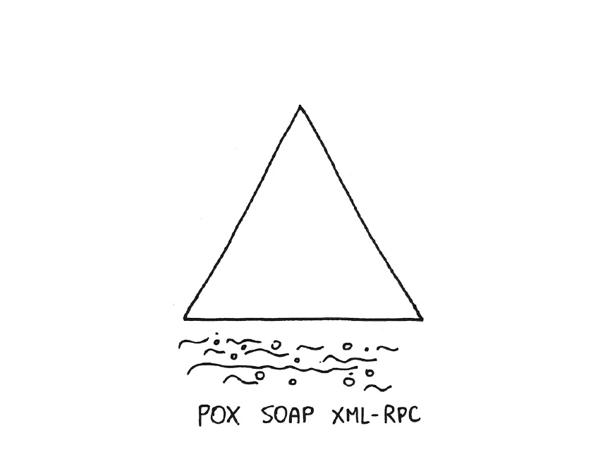
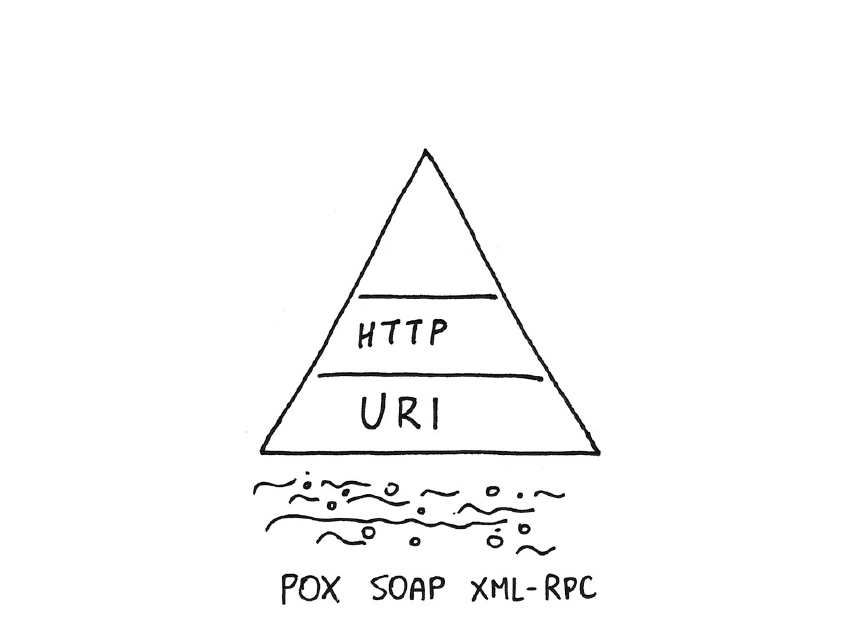

public class ShopServlet extends HttpServlet {
private ShopDao shopDao;
public ShopServlet() {
shopDao = new ShopDao(); (1)
PasswordVerifier.getInstance().verify(); (2)
}
}Spring Framework
Zakres
Spring
Kontener (XML, adnotacje)
Zależności, fabryki, prototypy
Aspekty, Walidacja
Test integracyjne aplikacji z wykorzystaniem Frameworka
Baza danych na różne sposoby (JDBC, ORM, JPA)
Spring Web
Spring Web vs Spring WebMVC
Bezpieczeństwo aplikacji webowych i sposoby uwierzytelniania
Usługi REST
Moduł 1: Spring Framework
Spring Framework
Koncepcja POJO programming
Misja Spring
Elementy frameworka
Ekosystem narzędzi SpringSource
Spring Framework a EJB
Plain Old Java Objects
Obiekty nie związane z jakimkolwiek API
Nie implementują specyficznych interfejsów platformy (jak np EJB 2.x)
Nie są związane ze środowiskiem, serwerem, frameworkiem
Tylko przechowują dane i realizują usługi (funkcjonalności) biznesowe
POJO Programming
Zapewnia przenaszalność kodu
poprzez oderwanie od środowiska działania
kod może być współdzielony pomiędzy środowiskami
Wspiera testowalność
do uruchomienia nie jest wymagany kontener
Misja Spring Framework
Spring nie konkuruje z istniejącymi rozwiązaniami, które dobrze się sprawdzają. Zamiast tego wspiera ich integrację.
Spring nie wymusza API. Nie ma konieczności instalowania dodatkowych serwerów aplikacji.
Spring ma być przyjemny w użyciu, podnosić efektywność programistów. Spring Framework ma po prostu działać.
Spring wspiera tworzenie wysokiej jakości, testowalnego oprogramowania.
Dobry obiektowy projekt aplikacji jest ważniejszy niż technologie
Elementy frameworka
Kontener wstrzykiwania zależności
Kontekst aplikacyjny – dostęp do zasobów zewnętrznych
Aspekty
Zarządzanie transakcjami,
Abstrakcja warstwy dostępu do danych
Elementy frameworka

Projekty wspierające
- Spring MVC
kontener WWW oraz integracja z istniejącymi frameworkami
- Spring Web Flow
rozwinięcie prostego MVC w kierunku zaawansowanych aplikacji webowych (m.in. controlled navigation)
- Spring Web Service
Zdalne wywołania m.in. przez SOAP, usługi contract-first
- Spring Security
autoryzacja i uwierzytelnianie w aplikacjach webowych
- Spring Integration
Narzędzia do tworzenia systemów w oparciu o Enterprise Integration Patterns
Spring Framework a EJB
Spring Framework
Dowolne łączenie bibliotek i narzędzi, włączanie modułów gdy zachodzi taka potrzeba.
Intensywny rozwój, nowe funkcjonalności pojawiają się z dużą regularnością
EJB
Monolityczna całość, funkcjonalności uruchamiane nawet gdy nie są wykorzystywane.
Specyfikacja rodzi się w bólach, przez lata. Wydania raz na kilka lat.
Spring Framework a EJB
Spring Framework
Spring jest całością samą w sobie. Kontener Spring jest pomostem pomiędzy aplikacją a serwerem (środowiskiem) – uniezależniając system od konkretnego dostawcy.
EJB
Przenaszalność aplikacji jest fikcją. Specyfikacja nie dookreśla wielu aspektów, zmuszając programistę do wyboru konkretnej platformy (ang. vendor lock-in)
Moduł 2: Kontener Spring
Kontener Spring
Kontener, fabryka komponentów
Tworzenie komponentów
Standard JSR-330
Konfiguracja kontekstu: adnotacje, XML, JavaConfiguration
Zakresy komponentów
Cykl życia komponentu
Zdarzenia
Smaki odwracania zależności
Mechanizm Inversion of Control (odwrócenie sterowania) to mechanizm przeniesienia na zewnątrz komponentu odpowiedzialności za kontrolę wybranych czynności
Rozróżniamy kilka realizacji odwrócenia sterowania
Dependency Injection
Zdarzenia
Aspekty
Wstrzykiwanie zależności
Wstrzykiwanie zależności to tylko jeden z przykładów realizacji IoC
Dependency Injection zwalania obiekt z tworzenia konkretnych instancji obiektów w nim agregowanych
Odwracane jest sterowanie w zakresie tworzenia powiązań pomiędzy obiektami
Obiekty nie decydują o konkretnych typach obiektów zawieranych
Minimalizuje to zależności pomiędzy klasami (ang. coupling)
Zdarzenia
Wykorzystując zdarzenie obiekty nie wiedzą zarówno o typie obiektów współpracujących, jak i o:
ilości obiektów współpracujących
ich typów
wyników ich pracy
kolejności wykonania
czasu, w którym wykonają pracę
Zdarzenie modeluje fakt, który miał miejsce i nie ma możliwości zawetowania go
Możliwia jest jedynie reakcja na zdarzenie (w innym miejscu systemu)
Aspekty
Aspect Oriented Programming (AOP) używamy w celu dodania dodatkowych Aspektów do Aspektu głównego.
W aplikacjach biznesowych aspektem głównym jest zwykle logika biznesowa
aspekty dodatkowe, to zagadnienia ortogonalne (nie przecinające się z logiką biznesową) takie jak transakcyjność, bezpieczeństwo, audit logi
Zagadnienia te są w dużym stopniu rozłączne pomiędzy sobą pod względem funkcjonalnym
Wzajemne przenikanie się wymagań klienta opisanych przez aspeky czyni kod mniej czytelnym, bardziej podatnym na błędy, trudniejszym w modyfikacji
Wewnętrzne zależności
Kod trudny w testowaniu, rozbudowie, utrzymaniu
Kod staje się niemożliwy do przeniesienia
Wewnętrzne zależności
Używanie obiektów typu POJO
Obiekty nie związane z jakimkolwiek API
Zapewnia testowalność i przenaszalność kodu
Programowanie poprzez interfejsy
Powiązania między interfejsami czynią kod bardziej elastycznym
Nadużywanie interfejsów może być bardziej kłopotliwe niż ich brak
Wstrzykiwanie zależności
Podejście aspektowe
Kontener Spring
Fabryka komponentów: dostarcza obiektów gotowych do użycia.
Rozwiązuje zależności pomiędzy komponentami; w sposób automatyczny bądź na podstawie konfiguracji
Zarządza cyklem życia obiektów
Umożliwia komunikację pomiędzy komponentami z wykorzystaniem zdarzeń
Kontener Spring oferuje jedynie synchroniczną komunikację opratą na zdarzeniach
Komponent Spring
Aby Spring rozpoczął zarządzanie obiektem należy umieścić go w kontenerze
Umieszczenie polega na dodaniu wpisu do deskryptora XML lub dodaniu adnotacji do klasy obiektu
Obiekt umieszczony w kontenerze staje się komponentem zarządzanym (managed bean)
Kontener
BeanFactoryTworzy komponenty i zarządza cyklem ich życia
ApplicationContextDostarcza mechanizm obsługi zdarzeń
Wspiera internacjonalizację aplikacji
Wstępnie inicjalizuje komponenty
Rejestruje i uruchamia obiekty rozszerząjace cykl życia kontenera
BeanFactory
XmlBeanFactoryOdczytuje konfigurację z pliku XML
SimpleJndiBeanFactoryPoszukuje komponentów zarejestrowanych w drzewie JNDI (na serwerze aplikacji) w przestrzeni
java:comp/env
ApplicationContext
ClasspathXmlApplicationContextPobiera konfigurację XML z plików znajdujących się w ścieżce classpath. Wykorzystane w aplikacjach standalone
FileSystemXmlApplicationContextPobiera konfigurację XML z plików znajdujących się w systemie plików. Wykorzystane w aplikacjach standalone
ApplicationContext (2)
AnnotationConfigApplicationContextWykorzystuje konfigurację opartą o adnotację i JavaConfig. Wykorzystane w aplikacjach standalone
*WebApplicationContextKontekst wykorzystywany w aplikacjach webowych; konfiguracja odczytywana z katalogu WEB-INF
Static*ApplicationContextKonfiguracja wykorzystywana w testach
Uruchomienie aplikacji
public class App {
public static void main(String... args) {
ApplicationContext ctx = new AnnotationConfigApplicationContext(Cfg.class);
Controller c = ctx.getBean(Controller.class); (1)
c.run();
}
}| 1 | Komponent zdefiniowany przez nas |
public class App {
public static void main(String... args) {
ApplicationContext ctx = new ClassPathXmlApplicationContext(
"META-INF/spring/app-context.xml");
Controller c = ctx.getBean(Controller.class);
c.run();
}
}Tworzenie komponentów
<?xml version="1.0" encoding="UTF-8"?>
<beans xmlns=http://www.springframework.org/schema/beans
xmlns:xsi=http://www.w3.org/2001/XMLSchema-instance
xmlns:context=http://www.springframework.org/schema/context
xsi:schemaLocation="http://www.springframework.org/schema/beans http://www.springframework.org/schema/beans/spring-beans-3.0.xsd
http://www.springframework.org/schema/context http://www.springframework.org/schema/context/spring-context-3.0.xsd">
<context:annotation-config />
<context:component-scan
base-package="com.example.*" />
</beans>Tworzenie komponentów
@Configuration
@ComponentScan(basePackages = {"com.example.dictionary", "com.example.helloworld"},
excludeFilters = @ComponentScan.Filter(type = FilterType.REGEX, pattern = ".*Service"))
public class AppConfiguration {
}Tworzenie komponentów
Włącza obsługę adnotacji konfiguracyjnych – takich, które nie definiują komponentu
<context:annotation-config />Brak odpowiednika w konfiguracji Java - domyślne zachowanie
Tworzenie komponentów
Pozwala wykrywać adnotacje definiujące komponenty: @Component, @Service, @Repository, @Controller
<context:component-scan base-package="com.example.spring.*" />@ComponentScan({"com.example.dictionary", "com.example.helloworld"})Tworzenie komponentów
Atrybuty include-filter oraz exclude-filter mogą regulować czy konkretne klasy zostaną dołączone do projektu.
<context:component-scan
base-package="com.example.spring.*">
<context:exclude-filter
type="regex"
expression=".*Service"/>
</context:component-scan>@ComponentScan(basePackages = {"com.example.dictionary", "com.example.helloworld"},
excludeFilters = @ComponentScan.Filter(type = REGEX, pattern = ".*Service"))Tworzenie komponentów
Adnotacja
@Componentjest wystarczająca aby dodać nowy komponent do kontekstuAdnotacje
@Service,@Resourcebądź@Controllerdodatkowo opisują cel istnienia komponentu i umożliwiają budowę elastycznej konfiguracji
@Component
public class ExampleService {
public String getMessage() {
return "Hello world!";
}
}Nazewnictwo
Komponenty w Spring Framework rozróżniane są po nazwie
Domyślna nazwa generowana jest automatycznie zgodnie z konwencją JavaBeans
<bean id="shopService" class="foo.ShopService" />@Component("myService")
public class ShopService {
//..
}Łączenie komponentów
Adnotacją
@Autowiredmożna łączyć komponenty ze sobą.Oznaczamy pole klasy, modyfikator (setter) lub konstruktor
@Component
public class ExampleService {
@Autowired AnotherService service;
public String getMessage() {
return service.get("Hello world!");
}
}JSR 330
Adnotacje
@Namedi@Injectustandaryzowały wstrzykiwanie zależnościGwarantują przenaszalność kodu pomiędzy frameworkami Dependency Injection (Guice, CDI).
@Named
public class ExampleService {
@Inject
AnotherService service;
//..
}Zakres działania komponentu
W odróżnieniu od EJB – komponenty nie podlegają zarządzaniu w oparciu o pulę
Podstawowe zakresy to: singleton i prototype
Każde pobranie komponentu typu singleton zwróci referencję do tej samej instancji
Przy każdym pobraniu komponentu prototype zostanie zwrócony nowy obiekt
Dodatkowe zakresy to thread, request, session i globalSession.
Cykl życia komponentów
Najpopularniejszą metodą połączenia komponentu ze zdarzeniami kontenera jest użycie adnotacji @PostConstruct i @PreDestroy
@Component
public class ExampleService {
@PostConstruct public void startup() {
System.out.println("Preparing the message...");
}
@PreDestroy public void shutdown() {
System.out.println("...finishing.");
}
}Cykl życia komponentów
Implementując interfejsy InitializingBean oraz DisposableBean, wymuszana jest implementacja metod afterPropertiesSet() oraz destroy().
@Named
public class ExampleService implements
InitializingBean, DisposableBean {
public void afterPropertiesSet() throws Exception {
System.out.println("Preparing the message...");
}
public void destroy() throws Exception {
System.out.println("...finishing.");
}
}Cykl życia komponentów
Bez konieczności implementowania specyficznych interfejsów można wymusić wywołanie poprzednich metod z poziomu konfiguracji XML
<bean class="com.example.spring.example001.ExampleService"
init-method="afterPropertiesSet"
destroy-method="destroy"
/>Moduł 3: Wstrzykiwanie zależności
Wstrzykiwanie zależności
Łączenie komponentów
Kwalifikatory
Wstrzykiwanie zasobów
Wstrzykiwanie wielu instancji komponentu
Stan początkowy komponentu
Adnotacja @Autowire
Spring posiada mechanizmy automatycznego odnajdywania zależności
Zmniejsza potrzebę jawnego definiowania konfiguracji
Adnotacją można oznaczyć pole, modyfikator lub konstruktor
Framework samodzielnie dopasuje i wybierze komponenty do wstrzyknięcia
Adnotacja @Autowire
Zadziała poprawnie jeżeli framework dopasuje jeden (i tylko jeden) element do wstrzyknięcia
Poprzez atrybut required="false" można ustawić zależność jako opcjonalną
Wstrzykiwanie domyślnie odbywa się po typie komponentu, ale jest to konfigurowalne
Jeżeli w kontekście istnieje więcej niż jeden element możliwy do wstrzyknięcia, konieczne jest bardziej zaawansowane rozwiązywanie zależności
Typy wstrzykiwania
<beans xmlns="http://www.springframework.org/schema/beans"
xmlns:xsi="http://www.w3.org/2001/XMLSchema-instance"
xsi:schemaLocation="http://www.springframework.org/schema/beans http://www.springframework.org/schema/beans/spring-beans.xsd"
default-autowire="byName" (1)
/>| 1 | Determinuje sposób rozwiązywania zależności |
Typy wstrzykiwania (2)
no | Brak mechanizmu autowiring. |
byName | Spring wyszukuje zależności na bazie porównywania nazw komponentów i nazw właściwości. np. setGeneraror() → <bean id="generator" /> |
byType | Wyszukiwanie zależności następuje po typie, pod warunkiem, że istnieje zdefiniowany tylko jeden komponent danego typu. W przeciwnym razie zostanie zgłoszony wyjątek. |
constructor | Podobnie jak byType, przy czym ogranicza się tylko i wyłącznie do konstruktorów |
autodetect | Jeśli dla danej klasy istnieje konstruktor, używana jest strategia constructor, jeśli nie istnieje byType |
Konfiguracja XML
Komponenty definiujemy za pomocą tagu
<bean />. Nazwa komponentu (id) musi być unikalna.Zależności rozwiązywane są poprzez konstruktor bądź modyfikatory (settery)
Konfiguracja XML (2)
<bean id="taskService"
class="com.example.spring.todo.TasksService">
<property name="validator" ref="validator" />
<property name="sqlMapClient" ref="sqlMapClient" />
<property name="messages" ref="messageSource" />
</bean>
<bean id="taskService"
class="com.example.spring.todo.TasksService">
<constructor-arg ref="validator" />
<constructor-arg ref="messageSource" />
<constructor-arg ref="sqlMapClient" />
</bean>Więcej niż jedna instancja
Spring umożliwia automatyczne utworzenie list (tablicy) komponentów
Wstrzyknięte zostaną wszystkie komponentu pasujące do danego typu
@Autowired
List<TaskPrinter> printers;
public void print() {
for (TaskPrinter p : printers) {
p.printCurrentTasks();
}
}Więcej niż jedna instancja
Adnotacja @Autowired działa dla:
artybutów klasy (pól)
setterów
metod
konstruktorów – tylko jeden z konstruktorów może być oznaczony jako required
kolekcji – umieszczane są wszystkie komponenty o danym typie
map – kluczem jest nazwa komponentu a wartością referencja do niego
Interfejsów kontenera – np.
ApplicationContext
Adnotacja @Required
Oznacza daną zależność jako wymaganą (dotyczy setterów)
Sprawdzenie następuje w momencie uruchomienia kontenera
Użycie adnotacji
@Requiredjest torżsame z wykorzystaniem atrybuty required dla adnotacji@Autowired
Adnotacja @Resource
Wstrzykiwanie zasobów (fabryki BeanFactory, ApplicationContext itp.)
Może zostać wykorzystana do wstrzykiwania komponentów
Wstrzykiwanie przy użyciu @Resource odbywa się po nazwie (
default-autowire="byName")
@Resource(name = "prettyStringTaskPrinter")
TaskPrinter p;
public void print() {
p.printCurrentTasks();
}Zewnętrzne pliki properties
Spring umożliwia wczytywanie danych z zewnętrznych plików properties
Dane ładowane są w trakcie inicjalizacji aplikacji
<context:property-placeholder
location="classpath:META-INF/spring/dict.properties" />@Configuration
@PropertySource("classpath:META-INF/spring/dict.properties")
public class JavaConfiguration {
}Stan początkowy komponentu
Do inicjacji komponentu używamy adnotacji
@ValueWartość atrybutu można dowolnie zmieniać z poziomu konfiguracji
@Component
public class Service {
@Value("${urlStringTemplate}")
private String urlStringTemplate;
//..
}Więcej niż properties - SpEL
SpEL
expression language
analogicznie do OGNL, Jboss EL, etc.
dynamiczny język podobny do Groovy / Ruby
wspiera odczyt i modyfikacje obiektów w runtime
może być uzywany we wszystkich produktach z portfolio Spring
może być używane w oderwaniu od Springa (jako osobny parser)
Możliwości SpEL
expressions
accessing properties, arrays, etc.
assignment
method invocation
collection selection & projection
Wykorzystywane zarówno w konfiguracji XML jak i adnotacjach
ExpressionParser
ExpressionParser parser = new SpelExpressionParser();
Expression exp = parser.parseExpression("'Hello World'");
System.out.println("expression = " + exp.getValue());ExpressionParser
ExpressionParser parser = new SpelExpressionParser();
parser.parseExpression("'Hello World'").getValue(String.class);
parser.parseExpression("6.0221415E+23").getValue(Double.class);
parser.parseExpression("0x7FFFFFFF").getValue(Integer.class);
parser.parseExpression("'2011/01/17'").getValue(Date.class);
parser.parseExpression("true").getValue();
parser.parseExpression("null").getValue();EvaluationContext
Map<String, Person> map = new HashMap<String, Person>();
map.put("Dima", new Person("Dima", 27));
map.put("Anya", new Person("Anya", 23));
ExpressionParser parser = new SpelExpressionParser();
StandardEvaluationContext ctx = new StandardEvaluationContext();
ctx.setVariable("map", map);
ctx.setVariable("anya", "Anya");
parser.parseExpression("#map['Dima']").getValue(ctx);
parser.parseExpression("#map[#anya]").getValue(ctx);Obiekty, kolekcje, metody
#{person.name}
#{person.Name}
#{person.getName()}
#{list[0]}
#{list[0].name}
#{map[‘key’]}
#{‘Some Text’.substring(0, 2)}
#{‘Some Text’.startsWith(‘text’)}
#{“variable.toString()”}Wyrażenia i operatory
#{5 == 5} or #{5 eq 5}
#{‘black’ > ’block’} or #{‘black’ gt ‘block’}
#{‘text’ instanceof T(int)}
#{'5.00' matches '^-?\\d+(\\.\\d{2})?$'}
#{5 + 5}
#{(5 + 5) * 2}
#{17 / 5 % 3}
#{‘Hello’ + ‘ ‘ + ‘world’}
#{true or false}
#{!true}
#{not isUserInGroup(‘admin’)}Klasy
#{T(java.util.Date)}
#{T(String)}
#{T(int)}
#{T(Math).PI}
#{T(Math).random()}
#{new org.training.spel.Person(‘Misha’, 28)}
#{list.add(new org.training.spel.Person())}If-then-else
#{person.age>50 ? ‘Old’ : ‘Young’}
//Elvis operator
#{person.name ? : ‘N/A’}
//Safe navigation
#{address.city?.name}
#{person.name?.length()}Kolekcje
//select all
#{list.?[age>20]}
#{list.?[name.startsWith(‘D’)]}
//select first
#{list.^[age>20]}
//select last
#{list.$[getAge()>20]}
//select the names of all elements
#{list.![name]}
//select the names length of all elements
#{list.![name.length()]}Przykłady
<bean id="systemConfig" class="org.training.spel.SystemConfig">
<property name="operatingSystem"
value="#{systemProperties['os.name']}"/>
<property name="javaVersion"
value="#{systemProperties['java.vm.version']}"/>
</bean>Przykłady
public class SystemConfig {
@Value("#{systemProperties['java.vm.version']}")
private String operatingSystem;
@Value("#{systemProperties['java.vm.version']}")
private String javaVersion;
}Przykłady
@Value("#{systemProperties['locale']}")
private Locale locale;
//default
@Value("#{systemProperties['locale']?:'PL'}")
private Locale locale;
//selective
@Value("#{systemProperties['level']>2 ? gold : default}")
private AccountRepository repository;SpEL - kiedy używać
Uproszczona praca z
java.reflectionAPIWymaga znacząco mniej kodu
Wygodne spłaszczenie istniejącej struktury obiektów do par klucz-wartość
Np. na potrzeby cache, indeksacji
Możliwość definiowanie dynamicznych akcji z poziomu 'administracji'
Adnotacja @Qualifier
Jeśli komponent posiada więcej niż definicję poprzez adnotację
@Qualifiermożna odwołać się do konkretnej instancji komponentuW XML analogiczny efekt uzyskujemy atrybutem
<qualifier />
@Autowired(required=true)
public ReportGenerator(
@Qualifier("repService") ReportingService repService) {
this.reportingService = reportingService;
}<bean id="reportingService"
class="com.example.springtraining.domain.ReportingService">
<qualifier value="repService" />
</bean>Cykl życia komponentu
Kontener odnajduje definicje komponentów będących singletonami
Następuje inicjacja singletonów
Dla każdego komponentu
Następuje wstrzykiwanie zależności
Następuje wywołanie metody interfejsu
BeanNameAwareNastępuje wywołanie metody interfejsu
ApplicationContextAwareNastępuje wywołanie metody
@PostConstructNastępuje wywołanie metody z interfejsu
InitializingBeanNastępuje wywołanie metody skonfigurowanej z użyciem
init-methodNastępuje wywołanie metody interfejsu
BeanPostProcessor
Cykl życia komponentu (2)
Używanie komponentu
Następuje wywołanie metody
@PreDestroyNastępuje wywołanie metody z interfejsu
DisposableBeanNastępuje wywołanie metody skonfigurowanej z użyciem
destroy-method
Zdarzenia ApplicationContext
@Component
public class ReportGenerator implements ApplicationContextAware {
public void runReport() {
ReportEvent reportEvent = new ReportEvent(appCtx);
appCtx.publishEvent(reportEvent);
}
}@Component
public class ReportGenerator {
@Autowired
private final ApplicationEventPublisher publisher;
public void runReport() {
ReportEvent reportEvent = new ReportEvent();
publisher.publishEvent(reportEvent);
}
}Zdarzenia ApplicationContext
@Component
public class CompanyDao
implements ApplicationListener<ReportEvent> {
public void onApplicationEvent(ReportEvent event) {
// ...
}
}@Component
public class CompanyDao {
@EventListener
public void handleReportEvent(ReportEvent event) {
// ...
}
}Standardowe zdarzenia
ContextRefreshEvent | Obiekt |
ContextStartedEvent | Obiekt |
ContextStoppedEvent | Obiekt |
ContexClosedEvent | Obiekt |
RequestHandleEvent | Zdarzenie generowane tuż po obsłużeniu żądania HTTP, w przypadku używania dostarczanego przez Spring |
Bean Validation – JSR 303
Standard opisu poprawności modelu oraz API do walidacji
Zestaw meta adnotacji opisujących poprawność danych (
@NotNull,@Size,@Min,@Maxitd.)Referencyjna implementacja to Hibernate Validator
Spring może korzystać z referencyjnego walidatora, jak też z dostarczanego przez siebie adaptera (implementującego ten sam interfejs)
Bean Validation – JSR 303 (2)
public class Employee {
@NotNull
@Size(min = 5)
private String name;
@NotNull
@Size(min = 10)
private String address;
@Past
private Date birthdate;
//..
}Bean Validation – JSR 303 (3)
Dostęp do walidatora odbywa się przez
ValidationFactory
Employee employee = new Employee();
employee.setName("a");
employee.setAddress("Lodz");
ValidatorFactory validationFactory =
Validation.buildDefaultValidatorFactory();
Validator validator = validationFactory.getValidator();
Set<ConstraintViolation<Employee>> constraints =
validator.validate(employee); (1)| 1 | Lista błędów walidacji |
Bean Validation – JSR 303 (4)
Metoda
validate()sprawdza poprawność klasyobject – obiekt do walidacji
groups – grupa (lub lista grup) walidacyjnych
Grupa walidacyjna pozwala zawęzić zakres walidacji, tylko do pewnego podzbioru ograniczeń
Jest to pusty interfejs
Domyślna grupa walidacyjna to
javax.validation.groups.Default
Bean Validation – JSR 303 (5)
Bean Validation - Spring
Komponent LocalValidationFactoryBean można bezpośrednio użyć w aplikacji Spring
@Bean(name="validator")
public LocalValidatorFactoryBean validator() {
return new LocalValidatorFactoryBean();
}<bean id="validator"
class="o.s.v.beanvalidation.LocalValidatorFactoryBean" />Bean Validation - Spring
Zainicjowany walidator możemy wstrzyknąć jako komponent
@Autowired
private Validator validator;
public Set<ConstraintViolation<Param>> validate(Param p) {
return validator.validate(p, SearchValidationGroup.class);
}Własny walidator
Tworzymy adnotację na bazie adnotacji
@ConstraintImplementujemy interfejs
ConstraintValidator
@NameFormatting
public class Author implements Serializable {
//...
}Własny walidator
@Target( { ElementType.METHOD, ElementType.FIELD, ElementType.TYPE })
@Retention(RetentionPolicy.RUNTIME)
@Constraint(validatedBy = NameFormattingValidator.class)
public @interface NameFormatting {
String message() default {c.e.constraints.nameFormatting};
Class<?>[] groups() default {};
Class<? extends Payload>[] payload() default {};
}Własny walidator
public class NameFormattingValidator implements
ConstraintValidator<NameFormatting, Author> {
public boolean isValid(Author author,
ConstraintValidatorContext context) {
if (author == null) return true; (1)
//... dalsza logika walidacji
return true;
}
}Błędy walidacji
Błędy walidacji przechowywane są w strukturze implementującej interfejs
ConstrainViolationZwyczajowo błędy raportowane są za pomocą klucza: [nazwa_błedu].[obiekt].[atrybut_obiektu] np.:
Future.task.dateWartością jest domyślny opis błędu
Opisy błędu można z łatwością definiować i lokalizować wykorzystując mechanizm
ResourceBundlesiMessageSource
Legacy Spring Validation
Podstawowy interfejs Validator do tworzenia obiektów walidujących klasy modelu
public interface Validator {
public boolean supports(Class<?> arg0);
public void validate(Object arg0, Errors arg1);
}Legacy Spring Validation
Przykładowa implementacja
public class EmployeeValidator implements Validator {
private static final int MAX_NAME_LENGHT = 30;
private static final int MAX_ADDRESS_LENGHT = 80;
@Override
public boolean supports(Class<?> clazz) {
return Employee.class.equals(clazz);
}
//...Legacy Spring Validation
//...
@Override
public void validate(Object object, Errors e) {
ValidationUtils.rejectIfEmpty(e, "name", "name.empty");
ValidationUtils.rejectIfEmpty(e, "address", "address.empty");
Employee employee = (Employee) object;
if ( employee.getName().length() > MAX_NAME_LENGHT ) {
e.rejectValue("name", "name.tooLong");
}
//...
}
}Legacy Spring Validation
Klasa Errors
Reprezentuje i przechowuje informacje na temat błędów związanych z walidacją
Umożliwia zarejestrowanie błędów dla obiektu lub pojedynczego pola
Najważniejsze metody
reject(String errorCode [,String defaultMessage])
zarejestruje błąd dla całego obiektu; errorCode oznacza klucz błędu wProperties_rejectValue(String field, String errorCode, [String defaultMessage])
rejestruje błąd dla pojedynczego pola
Legacy Spring Validation
Klasa ValidationUtils
Pomocnicza klasa walidacyjna
Waliduje czy w obiekcie, pole nie jest puste
Działa na obiekcie typu Errors
Najważniejsze metody
rejectIfEmpty(Errors errors, String fld, String code [,String defaultMsg])
zarejestruje błąd dla całego obiektu, jeśli pole jest pusterejectIfEmptyOrWhitespce(Errors errors, String fld, String code [,String defaultMsg])
zarejestruje błąd dla całego obiektu, jeśli pole jest puste lub składa się tylko z białych znaków
Lokalizacja – i18n
Dodanie do konfiguracji komponentu MessageSource informuje framework o istnieniu wersji językowych
Atrybut
basenamewskazuje lokalizację pliku z tłumaczeniamiDla każdego kolejnego języka dodawana jest odpowiednia końcówka (
message_pl.properties)
Lokalizacja aplikacji
<bean id="messageSource"
class="o.s.c.support.ReloadableResourceBundleMessageSource">
<property name="basename" value="classpath:messages" />
<property name="defaultEncoding" value="UTF-8"/>
</bean>@Bean
public ResourceBundleMessageSource messageSource() {
ResourceBundleMessageSource messageSource =
new ResourceBundleMessageSource();
messageSource.setBasename("messages");
messageSource.setDefaultEncoding("UTF-8");
return messageSource;
}Lokalizacja aplikacji (3)
Aby skorzystać z i18n potrzebujemy dostęp do obiektu
ApplicationContextlubMessageSourceWygodną metodą jest wstrzyknięcie
MessageSourcedo klasyMetoda
getMessage(String key, Object[] args, Locale locale)służy do pobrania odpowiedniej wersji komunikatuMechanizm ten może być używany zarówno w walidacji i jak i całkowicie niezależnie
Używany jest w Spring MVC
Lokalizacja aplikacji (4)
public class ValidationService {
private MessageSource messageSource;
public void validate(Employee object) {
//... validate object
for (ConstraintViolation<Employee> fieldError : errors) {
String field = fieldError.getPropertyPath();
String code = fieldError.getMessageTemplate();
Locale locale = new Locale( "pl", "PL" );
messageSource.getMessage(code, new Object[]{}, locale);
}
}
}JUnit 4
Czym jest JUnit
Najpopularniejsze narzędzie do testowania w języku Java
Wspierane przez wiele środowisk programistycznych m. in. Eclipse, NetBeans, Idea IntelliJ
Istnieją wersję dla innych języków programistycznych np. NUnit, PHPUnit, FPCUnit
Alternatywa: TestNG (przyczyniło się do powstania wersji JUnit 4)
Nastawiony na asercje
Klasa testowa może być dowolną klasą
Metody testowe muszą być oznaczone adnotacją
@Test
JUnit 4
package com.foo.tdd.intro;
import static org.junit.Assert.*;
import org.junit.Test;
public class SampleTest {
@Test (1)
public void testToString() {
String string = "napis";
assertEquals( "napis", string.toString() ); (2)
}
}| 1 | Adnotacja oznaczająca test |
| 2 | Sprawdzenia, asercje |
Adnotacja @Test
@Test - dana metoda zostanie potraktowana jako test.
@Test( expected = NullPointerException.class ) (1)
public void testToStringWithNull() {
String string = null;
assertEquals( "napis", string.toString() );
}
@Test( timeout = 10 ) (2)
public void testToString() {
String string = "napis";
assertEquals( "napis", string.toString() );
}| 1 | Oczekiwany wyjątek wskutek wykonania metody |
| 2 | Limit czasowy na wykonanie testu |
Adnotacje @Before and @After
@Before– metoda zostanie wykonana przed każdym testem.
Zazwyczaj używana do inicjacji współdzielonych zmiennych (pól klasy testu).@After– metoda zostanie wykonana po każdym teście.
Podobnie jak wyżej. Dotyczy procesu kończenia testu.
Adnotacje @Before and @After (2)
public class StringI18nTest {
private HashMap<String, String> versions = new HashMap<>();
@Before
public void initTest() {
versions.put( "pl", "Dzień dobry przyjacielu" );
}
@Test
public void differentLanguageVersions() {
StringI18n hello = new StringI18n( versions );
assertEquals( "Dzień dobry przyjacielu", hello.get( "pl" ) );
}
@After
public void cleanup() {
versions.clear();
}
}Adnotacje @BeforeClass i @AfterClass
@BeforeClass– metoda zostanie wykonana przed wszystkimi testami.
Zazwyczaj używana do inicjacji inicjacji zasobów (bazy danych, połączenia sieciowe, otwarcia plików itp.) Przydatna, gdy pozyskiwanie zasobów jest kosztowne,@AfterClass– metoda zostanie wykonana po wszystkich testach.
Adnotacje @BeforeClass i @AfterClass (2)
public class DatabaseTest {
@BeforeClass
public static void setupBeforeClass() {
// inicjacja połączenia z bazą danych
}
@Test
public void findAll() {
// ...
}
@AfterClass
public static void setupAfterClass() {
// zamykanie połączenia z bazą danych
}
}Adnotacja @Ignore
@Ignore – test oznaczony tą adnotacją nie wykona się.
public class IgnoreTest {
@Ignore( "Test wycofany" )
@Test( timeout = 10 )
public void testToString() {
String string = "napis";
assertEquals( "napis", string.toString() );
}
}Adnotacje @Parameters i @RunWith
@Parameters– adnotacja służąca do oznaczenia metody, która zwraca listę parametrów wejściowych, z którymi będą uruchomione testy.
Przydatne, gdy test chcemy przeprowadzić dla wielu parametrów wejściowych i wyjściowych@RunWith– taką adnotacją należy oznaczyć klasę, która będzie korzystała z mechanizmu parametrów.
Adnotacje @Parameters i @RunWith (2)
@RunWith( Parameterized.class )
public class ParametersTest {
private int first, second, minimum;
public ParametersTest(int first, int second, int minimum) {
this.first = first;
this.second = second;
this.minimum = minimum;
}
@Parameters
public static Collection createParameters() {
Object parameters [][] = new Object [][] {
{1, 2, 1}, {-1, 0, -1}, {100, 1000, 100 }
};
return Arrays.asList( parameters );
}
@Test
public void minimum() {
assertEquals(
minimum, Math.min( first, second ) );
}
}JUnit Rules
JUnit Rules to dodatek umożliwiający zdefiniowanie dodatkowego zachowania do każdej metody testowej
Dodatkowego zachowania lub zmianę istniejącego
Reguły można stworzyć samodzielnie lub wykorzystać istniejące
Najpopularniejsze reguły to
TemporaryFolderruleExternalResourceruleExpectedExceptionruleTimeoutrule
TemporaryFolder
Reguła
TemporaryFolderumożliwiatworzenie plików
tworzenie folderów
usuwanie ich kiedy metoda testowa zakończy działania
Pliki tworzone są w lokalizacji
/tmpsystemu operacyjnegoReguła nie weryfikuje czy usunięcie się powiodło
Nie ma konieczności obsługi wyjątków związanych (blok
finally)
TemporaryFolder (2)
public class TestTemporaryFolderRule {
@Rule
public TemporaryFolder testFolder = new TemporaryFolder();
@Test
public void testInTempFolder() throws IOException {
File tempFile = testFolder.newFile("file.txt"); (1)
File tempFolder = testFolder.newFolder("folder"); (2)
System.out.println("Test folder: " + testFolder.getRoot());
// test...
}
}| 1 | Plik i folder zostaną usunięte po zakończeniu działania testu |
ExpectedException
Reguła umożliwia weryfikację że żaden wyjątek nie został wyrzucony podczas testów.
public class SimpleExpectedExceptionTest {
@Rule
public ExpectedException thrown = ExpectedException.none();
@Test
public void throwsNothing() {
// no exception expected, none thrown: passes.
}
@Test
public void throwsExceptionWithSpecificType() {
thrown.expect(NullPointerException.class);
throw new NullPointerException();
}
}Timeout
Reguła ustawia globalny timeout dla wszystkich metod testowych w klasie
Atrybut
@Test(timeout=100)działa w obrębie pojedynczej metody
Jako że każda metoda działa w osobnym wątku, wątek jest przerywany po upłynięciu czasu zdefiniowanego jako timeout
public static class HasGlobalLongTimeout {
@Rule
public Timeout globalTimeout = new Timeout(20);
@Test
public void infiniteLoop() {
while (true) {} //lub Thread.sleep(100);
}
}Asercje
assertEquals([komunikat,] oczekiwana, aktualna)
Należy zachowywać kolejność oczekiwana – aktualna, gdyż tylko wtedy komunikaty generowane przez JUnit będą w sposób prawidłowy informowały o przebiegu procesu testowania
Komunikat jest opcjonalny, warto dodać, aby informacja o błędzie była jednoznaczna
Asercje (2)
assertNull( [komunikat] , obiekt) assertNotNull( [komunikat] , obiekt)
Sprawdza czy podana referencja to null lub nie null
assertSame( [komunikat] , oczekiwana, aktualna) assertNotSame( [komunikat] , oczekiwana, aktualna)
Sprawdza czy podane referencje wskazują (lub nie) na ten sam obiekt
Asercje (3)
assertTrue( [komunikat] , warunek) assertFalse( [komunikat] , warunek)
Sprawdza czy podany warunek jest prawdziwy lub fałszywy
fail( [komunikat] )
Powoduje, że test, którego sterowanie dochodzi do tego miejsca, nie przechodzi + Najczęściej używane do zaawansowanego testowania wyjątków
Hamcrest Matchers
According to the project homepage, Hamcrest provides a library of matcher objects (also known as constraints or predicates) allowing match rules to be defined declaratively, to be used in other frameworks. Typical scenarios include testing frameworks, mocking libraries and UI validation rules.
Hamcrest is not a testing library: it just happens that matchers are very useful for testing.
Hamcrest - w przykładzie
assertEquals([komunikat,] oczekiwana, aktualna);assertThat(aktualna,
is(equalTo(oczekiwana));Hamcrest - w przykładzie (2)
assertEquals(someKittens, cat.getKittens().iterator().next()); (1)boolean found = false;
for (Kitten kitten: cat.getKittens()) {
if (kitten.equals(someKitten)) found = true; (1)
}
assertTrue(found);assertThat(cat.getKittens(), hasItem(someKitten));Moduł 4: Testowanie aplikacji Spring
Wsparcie dla testów
Wsparcie dla testów jest od zawsze obecne we frameworku (leżało u jego podstaw)
Zastosowanie wzorca Inversion of Control umożliwia łatwe i wygodne testowanie jednostkowe – wszystkie zależności mogą być rozwiązane ręcznie i nie ma potrzeby implementowania interfejsów
Testowanie od najwcześniejszych etapów wspiera elastyczną architekturę
Testy jednostkowe
Poprawne użycie wzorca Dependency Injection uwalnia nas od zależności od kontenera (serwera). Komponenty POJO możemy testować wykorzystując operator new
@Test
public void should_stop_running() {
ExitCommand command = new ExitCommand(new TranslationProcess());
TranslationProcess process = command.execute();
assertThat(process.isRunning(), is(equalTo(false)));
}Wykorzystanie mock objects
Analogicznie można wykorzystać mock objects
@RunWith(MockitoJUnitRunner.class)
public class ExitCommandMockedTest {
@Mock TranslationProcess process;
@InjectMocks ExitCommand command;
@Test public void should_stop_running() {
TranslationProcess process = command.execute();
assertThat(process.isRunning(), is(equalTo(false)));
Mockito.verify(process).setRunning(false);
}
}Testy integracyjne
Dotychczasowe testy uruchamiane były w oderwaniu od frameworka
Nie inicjowały kontenera / kontekstu
Spring Framework dostarcza mechanizmów testowania integracyjnego (z wykorzystaniem frameworka i jego komponentów)
Testy integracyjne wykorzystujemy do
Weryfikacji konfiguracji kontenera IoC
Weryfikacji działania dostępu do danych (JDBC / ORM)
Sprawdzenie poprawności zarządzania transakcjami w aplikacji
Testy integracyjne - przykład
@RunWith(SpringJUnit4ClassRunner.class) (1)
@ContextConfiguration(classes = JavaConfig.class) (2)
public class TranslationCommandValidationTest {
@Test
public void noAttributesCommand() {
//... test method body
}
}| 1 | Inicjalizacja kontekstu Spring |
| 2 | Lista klas używanych w teście (w tym także klasa konfiguracyjna @Configuration) |
Testy integracyjne - przykład
Adnotacja
@RunWith(SpringJUnit4ClassRunner.class)powoduje że test staje się komponentem zarządzanym przez kontener (możliwe jest m.in. wstrzykiwanie zależności)@ContextConfigurationumożliwia wywołanie istniejących konfiguracji (XML, JavaConfig)@ContextConfiguration.classesokreśla lokalizację klas konfiguracyjnych@ContextConfiguration.locationsokreśla lokalizację konfiguracyjnych plików XML. Domyślnie@ContextConfiguration.initializersokreśla klasy inicjalizujące kontekst (np. dodające nowe zmienne środowiskowe)
Testy integracyjne - przykład
Konwencje konfiguracji testów
@ContextConfiguration.classesDomyślna klasa konfiguracyjna to wewnętrzna klasa oznaczona adnotacją
@Configuration
@ContextConfiguration.locationsDomyślny plik konfiguracyjny dla klasy
com.example.FooTesttoclasspath:com/example/FooTest-context.xml
Testy integracyjne - mocks
Spring Framework dostarcza kilku klas wspomagających testy integracyjne
MockPropertySourceiMockEnvironmentsą przydatne przy symulowaniu zmiennych środowiskowych i zawartości plików propertiesPakiet
org.springframework.mock.webzawiera zestaw obiektów do pracy z aplikacjami WWW. Obiekty są lepiej przystosowane do natury frameworku niż generyczne mocki z Mockito lub EasyMock
Profile konfiguracyjne
Spring umożliwia jednoczesne zarządzanie kilkoma konfiguracjami i wykorzystanie tylko jednej z nich
W zależności od środowiska (dev, test, production) - tworzone są tylko wybrane komponenty
Profil deklarowany jest poprzez adnotację
@Profile("<nazwa>")i uruchamiany adnotacją@ActiveProfilesMożna aktywować więcej niż jeden profile - należy jednak stosować się do powszechnych reguł frameworka (np. brak komponentów o tej samej nazwie)
Profile konfiguracyjne
@Configuration
@Profile("dev")
public class StandaloneDataConfig {
@Bean
public DataSource dataSource() {
return new EmbeddedDatabaseBuilder()
.setType(EmbeddedDatabaseType.HSQL)
.addScript("classpath:com/bank/config/sql/schema.sql")
.addScript("classpath:com/bank/config/sql/test-data.sql")
.build();
}
}Profile konfiguracyjne
@Configuration
@Profile("production")
public class JndiDataConfig {
@Bean(destroyMethod="")
public DataSource dataSource() throws Exception {
Context ctx = new InitialContext();
return (DataSource) ctx
.lookup("java:comp/env/jdbc/datasource");
}
}Profile konfiguracyjne
@Configuration
public class TransferServiceConfig {
@Autowired DataSource dataSource;
@Bean
public TransferService transferService(AccountRepository rep) {
return new DefaultTransferService(rep);
}
@Bean
public AccountRepository accountRepository() {
return new JdbcAccountRepository(dataSource);
}
}Profile konfiguracyjne
@RunWith(SpringJUnit4ClassRunner.class)
@ContextConfiguration(classes = {
TransferServiceConfig.class,
StandaloneDataConfig.class,
JndiDataConfig.class})
@ActiveProfiles("dev")
public class TransferServiceTest {
@Autowired
private TransferService transferService;
@Test
public void testTransferService() {
// test the transferService
}
}Spring + Mockito
Spring i Mockito bardzo dobrze współdziałają.
Wykorzystując zarówno konfigurację
XMLjak iJavaConfigmożemy tworzyć komponenty Spring będące obiektami typu mock / stubWarunkiem jest obecność mockito
org.mockito:mockito-all:<version>w classpath
Spring + Mockito
@Bean
public PlatformTransactionManager txManager() {
return Mockito.mock(PlatformTransactionManager.class);
}<bean id="txManager" class="org.mockito.Mockito"
factory-method="mock">
<constructor-arg
value="o.s.transaction.PlatformTransactionManager"/>
</bean>Moduł 5: Programowanie aspektowe
Aspekty
Czym są aspekty?
Sposób działania oraz typy aspektów
Dołączenie aspektów do aplikacji
Przygotowanie i konfiguracja porady
Definiowanie punktów przecięcia
Czym są aspekty?
Aspekt umożliwia dekorowanie klasy dodatkowymi funkcjami, bez ingerencji w samą metodę.
Pewnym specyficznym użyciem takiej architektury są filtry w aplikacjach webowych.
Jest to architektura szczególnie przydatna podczas implementacji wymagań, które wykraczają poza jedną warstwę systemu.
Czym są aspekty? (2)
Object-Oriented Desing – aplikacje złożone są z różnych hierarchii współpracujących ze sobą obiektów
Aspect-Oriented Desing – wyróżnia w systemie aspekty, które w razie potrzeby mogą być włączane lub wyłączane
Czym są aspekty? (3)
Aspekt jest zaimplementowany w oddzielnym module / klasie
Pozwala programiście skoncentrować się na implementowaniu logiki biznesowej
Aspekt można wywoływać pomiędzy komponentami
Czym są aspekty? (4)

Aspekty - pojęcia
Advice (porada): akcja, która jest wykonywana w ramach aspektu.
Join point (czyli punkt złączenia): moment, w którym uruchamiana jest porada.
Pointcut (punkt przecięcia): predykat, który musi zostać spełniony, aby nastąpiło przecięcie.
Aspekt: jest to byt łączący wszystkie trzy pojęcia w całość.
| Aspekt definiuje kod, który zostanie uruchomiany w momencie zaistnienia zdarzenia, określonego w punkcie przecięcia dla metod (lub obiektów) określonych w punkcie złączenia. |
Rodzaje porad
- Before advice
porada uruchamiana jest przed akcją określoną w punkcie złączenia, nie mająca możliwości jej zablokowania.
- After returning advice
porada uruchamiana jest w momencie poprawnego zakończenia operacji (metody nie zwróciła wyjątku).
- After throwing advice
analogicznie do poprzedniego przypadku, z tą różnicą że akcja wywoływana jest w momencie zwrócenia wyjątku.
Rodzaje porad
- After advice
porada wykonywana zawsze po wywołaniu metody opisanej w punkcie złączenia
- Around advice
najpotężniejszy typ porad, uruchamiany przed wywołaniem akcji określonej w punkcie złączenia, mogący zablokować wywołanie metody lub dodatkowo zinterpretować zwrócony wynik.
Różne implementacje
W trakcie kompilacji – kod aplikacji jest modyfikowany w trakcie kompilowania
W trakcie ładowania klasy – aspekty dołączane są klas w momencie ich ładowania przez maszynę wirtualną
W trakcie wykonywania – obiekty są dynamicznie zastępowane (wzorzec proxy) przez środowisko AOP
Aspekty na niskim poziomie
Bez użycia aspektów klient komunikuje się bezpośrednio z komponentem

Aspekty na niskim poziomie
Aspekt wymusza komunikację z obiektem przez proxy
Metody przestają być wywoływane bezpośrednio dlatego istnieje możliwość wstrzyknięcia dodatkowej funkcjonalności
Implementacja
<beans>
<aop:aspectj-autoproxy />
</beans>@Configuration
@EnableAspectJAutoProxy
public static class AppConfiguration {
//..
}Implementacja (2)
@Component
@Aspect
public class AuditLoggingAspect {
@Before("execution(* com.example.service.Clazz.method(*))
&& args(params,..)")
public void logWebServiceCall(CommandParameters params) {
//..
}
}Rodzaje porad - adnotacje
@Before
Before advice jest uruchamiana przed wywołaniem metody określonej przez pointcut
@After
Jest uruchamiana po wywołaniu metody określonej przez pointcut
Uruchomienie nastąpi również, gdy metoda zostanie zakończona błędem
Rodzaje porad – adnotacje (2)
@AfterReturning
Jest uruchamiana po poprawnym wywołaniu metody określonej przez pointcut
Wiążąc parametr result adnotacji z nazwą parametru funkcji, można przechwycić rezultat wykonania metody obiektu docelowego
@AfterReturning( value="bean(*)", returning="result" )
public void afterReturning( Object result ) {
//..
}Rodzaje porad – adnotacje (3)
@AfterThrowing
Jest uruchamiana po wyrzuceniu wyjątku przez metodę określoną w pointcut
Dostęp do rzuconego wyjątku odbywa się poprzez powiązanie parametru metody z parametrem adnotacji @AfterThrowing
@AfterThrowing(value="bean(*)", throwing="ex" )
public void after( MyException ex ) {
//..
}Rodzaje porad – adnotacje (4)
@Around
Around advice przechwytuje wykonanie metody
Pierwszym parametrem metody musi być referencja typu ProcedingJoinPoint reprezentujący aktualny joinpoint
@Around( "bean(*)" )
public Object around( ProceedingJoinPoint p ) throws Throwable {
return p.proceed();
}Rodzaje porad – adnotacje (5)
Za pomocą wyrażenia args() można przechwycić parametry, z którymi wywoływana jest metoda obiektów docelowego
@Before( value="bean(*) && args(params)", argNames="params" )
public void around( Object params ) {
//..
}Punkty przecięć
Pointcuts definiowane są za pomocą języka wyrażeń AspectJ
Ze względu na specyfikę Spring AOP najczęściej używanym wyrażeniem jest
execution( modyfikator typ_zwracany klasa_interfejs nazwa_metody(parametry) wyjątki)
Wyrażenie execution aplikowane jest do wywołania metody
Punkty przecięć - definicje
modyfikator | public, private, protected, final, * |
typ_zwracany | void, java.lang.String, java.util.Map, * |
klasa_interfejs | Klasa/interfejs w której zadeklarowana jest metoda foo.Test, com.example..* (wraz z podpakietami) |
nazwa_metody | Find*, * |
parametry | (), ( java.util.List )* jeden parametr dowolnego typu(..) dowolna liczba parametrów |
wyjątki | throws foo.ApplicationException |
Punkty przecięć - definicje (2)
within | Wszystkie metody danej klasy |
args | Wszystkie metody posiadające wskazane parametry |
@args | Wszystkie metody, których parametry oznaczone są adnotacjami |
@within | Wszystkie metody klasy oznaczone daną adnotacją |
@annotation | Wszystkie metody oznaczone daną adnotacją |
bean | Specyficzna dla Springa, wskazuje określony komponent |
Punkty przecięć - przykłady
execution( * *(..) )execution( public java.util.Set pl.sevices..find*(..) )execution( * *(..) ) throws Exception )@annotation( org.springframework.beans.factory.annotation.Value )within( * )bean( * )bean( * Service )within( com.example..* )
Introductions
Wprowadzenie (introduction) polega na dodaniu do klasy funkcjonalności, której nie posiada
Wprowadzenie w Spring AOP realizowane jest poprzez dynamiczne dodanie nowych metod obiektu
Introductions - interfejsy (2)
public interface Named {
public void setName(String name);
public String getName();
}
public class NamedImpl implements Named {
private String name;
//..getters and setters ommitted
}Introductions - interfejsy (3)
public interface ShopService {
public void buy();
}
@Service("shopService")
public class DefaultShopService implements ShopService {
public void buy() {
//..
}
}Introductions - aspekt (4)
@Component
@Aspect
public class NamedAspect {
@DeclareParents(value="com.example.*ShopService",
defaultImpl=NamedImpl.class)
public static Named feature;
//..
}
}Introductions - wywołanie (5)
ApplicationContext ctx = ...
ShopService service = ctx.getBean("shopService",
ShopService.class);
service.buy();
Named namedService = (Named) service;
namedService.setName("defaultShopService");Moduł 6: Warstwa dostępu do danych
Baza danych w Springu
Konfiguracja bazy danych
Podstawowe metody dostępu do danych
JPA
Na czym polega zarządzanie encjami
Transakcje
Szablon JDBC

Szablon JDBC (2)
Większość operacji jest powtarzalna i stanowi pewien szablon.
Klasa JdbcTemplate stanowi tego typu szablon.
Programista zajmuje się przede wszystkim przygotowaniem zapytania i przetwarzaniem wyników.
Dostęp do danych w Springu
Spring umożliwia konfiguracja połączenia
bezpośrednio w pliku konfiguracyjnym
korzystając JNDI
Ostatecznie w ten sposób uzyskuje się obiekty typu
java.sql.DataSourceŹródło danych wykorzystywane jest przez wybrany mechanizm persystencji
Dostęp do danych w Springu
Spring dostarcza klasę
DriverManagerDataSource, którą można skonfigurować z użyciem parametrówurl – adres potrzebny do uzyskania połączenia
driverClassName – nazwa klasy sterownika
username, password – nazwa i hasło użytkownika
Dostęp do danych w Springu
DriverManagerDataSourcejest prostą implementacją interfejsuDataSourceKażde odwołanie się do puli tworzy nowe połączenie
Możliwe jest użycie ogólnodostępnych bibliotek do konfiguracji puli połączeń (np. Apache DBCP)
Dostęp do danych w Springu
<bean id="dataSource"
class="o.s.jdbc.datasource.DriverManagerDataSource">
<property name="driverClassName"
value="com.mysql.jdbc.Driver" />
<property name="url"
value="jdbc:mysql://localhost:3306/translations?
useUnicode=true&characterEncoding=utf-8" />
<property name="username" value="root" />
<property name="password" value="root" />
</bean>Dostęp do danych w Springu
<bean id="dataSource"
class="o.s.jdbc.datasource.DriverManagerDataSource">
<property name="driverClassName"
value="org.postgresql.Driver" />
<property name="url"
value="jdbc:postgresql://localhost:5432/translations" />
<property name="username" value="root" />
<property name="password" value="root" />
</bean>Dostęp do danych w Springu
@Bean
public DataSource dataSource() {
DriverManagerDataSource ds = new DriverManagerDataSource();
ds.setDriverClassName(com.mysql.jdbc.Driver.class.getName());
ds.setUrl("jdbc:mysql://localhost:3306/translations?
useUnicode=true&characterEncoding=utf-8");
ds.setUsername("root");
ds.setPassword("root");
return ds;
}Wykorzystanie JdbcTemplate
JdbcTemplateto komponent ułatwiający komunikację z bazą danych.Ogranicza on rolę programisty do konfiguracji połączenia do bazy oraz pisania zapytań SQL
Pozostałe czynności wykonuje framework
otwieranie połączenia do bazy danych
pobranie wyników oraz iteracja po nich (
ResultSet)obsługa błędów i transakcji
zamknięcie połączenia do bazy danych
Właściwości JdbcTemplate
Na klasie
JdbcTemplateopiera się całość obsługi JDBC w SpringuJdbcTemplatejest bezpieczny wątkowo (wystarczy konfiguracja tylko jednego komponentu)Komponent może być współdzielony przez wiele serwisów
Umożliwia pobieranie danych, jak też ich zapis, aktualizację oraz wywoływanie procedur po stronie bazy danych
Komponenty JdbcTemplate
NamedParameterJdbcTemplate
Wprowadza możliwość nazywania parametrów (nie tylko ich indeksowania)
SimpleJdbcTemplateUlepszona wersja
JdbcTemplateoparta o Java 1.5
SimpleJdbcInsertorazSimpleJdbcCallUpraszcza konfigurację do minimum bazując na meta informacjach dostarczonych przez bazę danych
MappingSqlQueryUmożliwia mapowanie zapytań SQL na obiekty
Szablon JdbcTemplate
JdbcTemplate jest obiektem bezpiecznym wątkowo
Może być współdzielony przez wiele obiektów
public class DataSourceRepository {
JdbcTemplate jdbcTemplate;
@Autowired
public DataSourceRepository(DataSource ds) {
jdbcTemplate = new JdbcTemplate(ds);
}
public int countWords() {
return jdbcTemplate.queryForInt("select count(*) from words")
}
}RowMapper
RowMapperumożliwia w ramach szablonu złożone przetwarzanie wyników.Głównie służy do zwracania kolekcji obiektów powstałych na bazie zapytania.
Umożliwia iterację po wynikach (
ResultSet)Ułatwia mapowanie wyników SQL na obiekty bez konieczności obsługi
SQLExceptions
RowMapper (2)
public List<DictionaryWord> getSavedWords() {
return jdbcTemplate.query("select * from words",
new RowMapper<DictionaryWord>() {
public DictionaryWord mapRow(ResultSet rs, int rowNum)
throws SQLException {
return DictionaryWord
.fromPolishWord(rs.getString("polish_word"))
.withEnglishWord(rs.getString("english_word"))
.build();
}
});
}ORM
Mapowanie obiektowo – relacyjne (ORM) to mechanizmy udostępniające warstwę abstrakcji ułatwiające korzystanie z baz danych
Są łącznikiem między światem obiektowym (Java) i relacyjnym (SQL)
Programista korzystający ze skonfigurowanego ORM nie musi znać struktur baz danych
ORM ukrywa szczegóły implementacji związanych z konkretnymi bazami danych
ORM w Springu
Spring umożliwia integrację z najpopularniejszymi narzędziami ORM (JPA, JDO, Hibernate, iBatis)
Framework dostarcza także własne podstawowe metody do pracy z obiektami (MappingSqlQuery)
Co daje użycie Spring:
Ułatwia zarządzanie zasobami (połączenie do bazy danych, źródła danych)
Oferuje zarządzanie transakcjami na poziomie aplikacji
Ułatwia testowanie
Mapowanie na obiekty
MappingSqlQueryułatwia mapowanie zapytań SQL na obiekty (coś na wzór Named Queries w JPA)Łączy w sobie zapytanie i obiektową reprezentacje
public class TaskMappingQuery extends MappingSqlQuery<Task> {
public TaskMappingQuery(DataSource ds) {
super(ds, "select * from tasks");
compile();
}
protected Task mapRow(ResultSet rs, int n)
throws SQLException {
//build and return Task object
}
}Mapowanie na obiekty (2)
public class TaskDao {
private TaskMappingQuery byIdMappingQuery;
@Autowired
public TaskDao(DataSource dataSource) {
this.byIdMappingQuery = new TaskMappingQuery(dataSource);
}
public Task getTaskById(long id) {
return byIdMappingQuery.findObject(id);
}
}Moduł 7: JMS
Komunikacja asynchroniczna
W dużych systemach rozproszonych komunikacja synchroniczna pomiędzy poszczególnymi częściami aplikacji ma następujące wady
Zużywa wiele zasobów
Jest wrażliwa na zerwanie połączenia
Wprowadza silny związek pomiędzy stronami komunikacji
Wprowadzenie systemu komunikacji asnychronicznej (Message-Oriented Middleware) częściowo rozwiązuje te problemy
Java Message Service API
Sposoby komunikacji
Kolejka (ang. Queue) połączenie punkt-punkt
nadawca wysyła wiadomości do kolejki, odbiorca - odbiera.
każdy komunikat może zostać odebrany przez tylko przez jednego odbiorcę, który potwierdza odbiór wiadomości.
Temat (ang. Topic) publikacja - subskrypcja
każda wiadomość może mieć wielu odbiorców (subskrybentów), a także wielu nadawców.
wiadomość jest usuwana dopiero gdy zostanie dostarczona do wszystkich subskrybentów.
Komponenty sterowane komunikatami
Kontener aplikacyjny zapewnia
zarządzanie zasobami,
zarządzanie wątkami,
transakcyjność, potwierdzanie odbioru,
bezpieczeństwo wywołań,
równoważenie obciążenia.
Programista skupia się tylko i wyłącznie na realizacji wymagań biznesowych
Configuration
private static final String DEFAULT_BROKER_URL = "tcp://localhost:61616";
private static final String ORDER_QUEUE = "words-queue";
@Bean
public ActiveMQConnectionFactory connectionFactory(){
ActiveMQConnectionFactory connectionFactory = new ActiveMQConnectionFactory();
connectionFactory.setBrokerURL(DEFAULT_BROKER_URL);
connectionFactory.setTrustAllPackages(true);
return connectionFactory;
}
@Bean
public JmsTemplate jmsTemplate(ConnectionFactory cf){
JmsTemplate template = new JmsTemplate();
template.setConnectionFactory(cf);
template.setDefaultDestinationName(ORDER_QUEUE);
return template;
}Configuration
private static final String DEFAULT_BROKER_URL = "tcp://localhost:61616";
@Bean
public DefaultJmsListenerContainerFactory jmsListenerContainerFactory(ConnectionFactory cf) {
DefaultJmsListenerContainerFactory factory = new DefaultJmsListenerContainerFactory();
factory.setConnectionFactory(cf);
factory.setConcurrency("1-1");
return factory;
}Message Producer
Connection connection = connectionFactory.createConnection();
Session session = connection.createSession(false, Session.AUTO_ACKNOWLEDGE);
Queue queue = session.createQueue("words-queue");
MessageProducer producer = session.createProducer(queue);
TextMessage message = session.createTextMessage(word);
producer.send(message);Message Producer
private JmsTemplate jmsTemplate;
private Queue queue;
public void setConnectionFactory(ConnectionFactory cf) {
this.jmsTemplate = new JmsTemplate(cf);
}
public void simpleSend() {
this.jmsTemplate.send(getQueueName(), new MessageCreator() {
public Message createMessage(Session session) throws JMSException {
return session.createTextMessage("hello queue world");
}
});
}Message Listener
Connection connection = cf.createConnection();
Session session = connection.createSession(false, Session.AUTO_ACKNOWLEDGE);
Queue queue = session.createQueue(QUEUE);
MessageConsumer consumer = session.createConsumer(queue);
connection.start();
for (;;) {
Message receivedMessage = consumer.receiveNoWait();
if (receivedMessage != null) {
LOG.info("JMS message received with {} \n{}", receivedMessage.getJMSMessageID(), ((ObjectMessage)receivedMessage).getObject());
}
Thread.sleep(1000);
}Message Listener
@Component
public class MessageReceiver {
@JmsListener(destination = "queue-name")
public void receiveMessage(final Message<String> message) throws JMSException {
MessageHeaders headers = message.getHeaders();
String response = message.getPayload();
}
}Servlet API
Co to jest Java Servlet
Technologia do generowania dynamicznych stron WWW (tak jak PHP, ASP, ASP.NET, …)
Protokół i niezależne od platformy komponenty serwerowe, napisane w Javie, które rozszerzają standardowe serwery WWW (takie jak Apache)
Klasa HttpServlet
Umożliwia dynamiczne generowanie zawartości strony (HTML, XML, …)
Co to jest Java Servlet
Framework umożliwiający budowanie aplikacji w oparciu o paradygmat żądanie – odpowiedź (request-response paradigm)
Działają na każdym serwerze aplikacji Javy
Siłą rzeczy mogą wykorzystywać szerokie i powszechne API JavaEE
JDBC, Persistence, EJB, JMS, JAX-WS, JTA, JTS, RMI, JNDI, JAXP, …
Podstawa wielu frameworków webowych w świecie Javy (JSP, JSF, …)
Servlet Services
Java Servlets umożliwiają
Niskopoziomowe API do budowania aplikacji internetowych
Podstawe dla innych frameworków i narzędzi: JavaServer Pages (JSP) oraz JavaServer Faces (JSF)
Może dostaraczać różne typy danych dla dowolnego klienta
XML, HTML, WML, GIF, etc…
Może działać jako kontroler w aplikacjach JSP (w rozumieniu wzorca MVC)
Servlets Architecture
- Klasa HttpServlet
Obsługuje żądania HTTP
Dla każdej metody HTTP (GET, POST, i inne) jest adekwatna metoda w klasie HttpServlet:
doGet(…)– HTTP GET requestsdoPost(…)– HTTP POST requestsdoPut(…),doHead(…),doDelete(…),doTrace(…),doOptions(…)
Servlet musi implementować jedną z powyższych metod albo metodę
service(…)
Servlets Architecture (2)
- Obiekt HttpServletRequest
Zawiera informacje z żądania od klienta
Nagłówki HTTP
Zawartość formularza oraz parametry
Inne dane od klienta (ciastka, ścieżki, etc.)
- Obiekt HttpServletResponse
Enkapsuluje dane przesyłane do klienta
Nagłówki odpowiedzi HTTP (content type, cookies, etc.)
Response body (jako OutputStream)
Servlets Architecture (3)
- HTTP GET używamy gdy
Żądanie nie zmienia stanu serwera
Operujemy na niewielkiej ilości danych (max query string 64kb w IE)
Request (ścieżka) jest ‘bookmarkowalna’
- HTTP POST używamy gdy
Żądanie zmienia stan serwera, aplikacji (np. Zapisujemy dane w bazie danych)
Przesyłamy dużą ilość danych
Przesyłane dane niekoniecznie powinny być widoczne w URL
Servlets API
Najważniejsze elementy API
Pobiera zawartość parametrów formularza (zarówno dla GET jak i POST)
HttpServletRequest.getParameter(String)Parametry inicjalizacyjne servleta
ServletConfig.getInitParameter()Nagłówki HTTP
HttpServletRequest.getHeader(String)Servlets API (2)
Najważniejsze elementy API
Ustawienie HTTP response header / content type
HttpServletResponse.setHeader(<name>, <value>)
HttpServletResponse.setContentType(String)Pobranie strumienia (tekstowego / binarnego) do wysłania odpowiedzi
HttpServletResponse.getWriter()
HttpServletResponse.getOutputStream()Przekierowanie żądania HTTP na inny adres URL
HttpServletResponse.sendRedirect()Servlets Life-Cycle
Kontener Webowy zarządza cyklem życia serwletów
Metody cyklu życia nie powinny być wywoływane z kodu aplikacji
Metody cyklu życia można jednak nadpisywać

Metoda init()
Metoda wywoływana przez kontener w momencie utworzenia instancji serwletu
Specyfikacja serwletów gwarantuje że inicjalizacja zostanie zakończona przed przetworzeniem pierwszego żądania
Nadpisanie metody
init()zaleca się gdy:Należy utworzyć lub połączyć się z zasobami które są wymagane podczas przetwarzania żądania
Należy zainicjować stan serweltu (np. otworzyć połączenie do zewnętrznych zasobów)
Metoda service()
Metoda wywoływana przez kontener webowy w momencie przetważania żądania użytkownika
Deleguje HTTP requests do metod
doGet(…),doPost(…), etc. zależnie od metody HTTP (GET, POST, itd)Zwraca rezultat działania poprzez obiekt HTTP response
Zasadniczo nie powinno być potrzeby nadpisywania tej metody
Metoda destroy()
Metoda wywoływana przez kontener w momencie usuwania instancji serwletu
Specyfikacja serwletów gwarantuje że wywołania wszystkich metod zostaną zakończone przez wywołaniem tej metody
Nadpisanie metody
destroy()zaleca się gdy:Należy zamknąć dostęp do zasobów zainicjowanych (otwartych) w metodzie
init()Należy zapisać stan serwletu (np. serializować)
Parametry – Hello Servlet
Serwlet Hello World
Formularz przesyłający dane
<form method="GET or POST" action="the servlet">
<input type="text" name="user_name">
</form>Serwlet odbierając dane
String name = request.getParameter("user_name");Hello Servlet – Example
<html>
<body>
<form method="GET" action="HelloServlet">
Please enter your name: <input type="text" name="user_name">
<input type="submit" value="OK">
</form>
</body>
</html>Hello Servlet – Example
public void doGet(HttpServletRequest request, HttpServletResponse response)
throws ServletException, IOException {
String userName = request.getParameter("user_name");
response.setContentType("text/html");
ServetOutputStream out = response.getOutputStream();
out.println("<html><head>");
out.println("\t<title>Hello Servlet</title>");
out.println("</head><body>");
out.println("\t<h1>Hello, " + userName + "</h1>");
out.println("</body></html>");
}Filtry
Kod które będzie wykonany przed Servletem (stroną JSP)
W ramach pre-procesowania
ServletRequestlub post-procesowaniaServletResponse
Preprocess
Uwierzytelnianie
Logowanie
Zmiana danych w requestcie
Postprocess
Szyfrowanie odpowiedzi
Kompresja odpowiedzi
Filtry - przykłady
@WebFilter("/*")
public class MyFilter implements Filter {
// implements Filter's methods here...
}@WebFilter(servletNames = {"MyOwnServlet", "UploadServlet"})
public class MyFilter implements Filter {
// implements Filter's methods here...
}@WebFilter(
urlPatterns = "/uploadFilter",
initParams = @WebInitParam(name = "fileTypes", value = "doc;xls;zip;txt;jpg;png;gif")
)
public class UploadFilter implements Filter {
// implements Filter's methods here...
}Event Listeners
Zdarzenia wynikające z cyklu życia serwera WWW
Mogą wynikać z pojedynczego requestu, sesji albo działania samej aplikacji
Utworzenie kontekstu (aplikacji):
ServletContextListeneroraz jej atrybutów:ServletContextAttributeListenerSesja: utworzenie (
HttpSessionListener) oraz modyfikacje atrybutów (HttpSessionAttributeListener)Request: utworzenie (
ServletRequestListener) oraz modyfikacje atrybutów (ServletRequestAttributeListener)
Moduł 8: Warstwa web
Wprowadzenie do Spring Web
Spring Web a Spring WebMVC
Komponenty Spring w aplikacji www
Budowa Spring WebMVC
Pojęcie FrontControllera i zasada działania aplikacji Spring MVC
Kontrolery i widoki
Odpowiedzi inne niż HTML (REST services)
Testowanie aplikacji Spring WebMVC
Spring Web
Umożliwia wykorzystanie komponentów Spring w kontekście aplikacji WWW
Nie wymaga korzystanie ze Spring WebMVC
Współpracuje z dowolnym frameworkiem MVC opartym o Java Servlets
Integracja nie wymaga dodatkowych plugin’ów po stronie frameworka
Z punktu widzenia warstwy WWW kontekst Spring jest biblioteką wykorzystywaną w aplikacji
ApplicationContextstanowi wejście do 'ekosystemu' Spring’aUżywając
ContextLoaderListenermożliwe jest użycie Springa (zarządzania komponentami) bez konieczności korzystaniaDispatcherServlet(Spring MVC)Odczytany kontekst dostępny jest poprzez statyczne metody komponentu
WebApplicationContextUtils.
Konfiguracja Spring Web
<context-param> (1)
<param-name>contextClass</param-name>
<param-value>org.springframework.web.context.support.AnnotationConfigWebApplicationContext</param-value>
</context-param>
<context-param> (2)
<param-name>contextConfigLocation</param-name>
<param-value>com.example.App</param-value>
</context-param>
<listener> (3)
<listener-class>org.springframework.web.context.ContextLoaderListener</listener-class>
</listener>| 1 | Implementacja klasy inicjalizującej kontekst (na podstawie konfiguracji coontextConfigLocation). Domyślnie konfiguracji XML |
| 2 | Lokalizacja konfiguracji kontekstu Spring, domyślnie /WEB-INF/applicationContext.xml |
| 3 | Klasa związana z cyklem życia kontenera serwletów (ServletContextListener) - inicjalizująca kontekst w momencie startu serwera |
Konfiguracja Spring Web
public class MyWebAppInitializer implements WebApplicationInitializer {
@Override
public void onStartup(ServletContext container) {
// Create the 'root' Spring application context
AnnotationConfigWebApplicationContext rootContext =
new AnnotationConfigWebApplicationContext();
rootContext.register(AppConfiguration.class, SpringRequestHandler.class);
// Manage the lifecycle of the root application context
container.addListener(new ContextLoaderListener(rootContext));
ServletRegistration.Dynamic dispatcher =
container.addServlet("myRequestHandler", new AppServlet());
dispatcher.addMapping("/");
}
}Wykorzystanie Spring Web
public class AppServlet extends javax.servlet.http.HttpServlet {
WebApplicationContext webApplicationContext;
public void init(ServletConfig config) throws ServletException {
super.init(config);
webApplicationContext = WebApplicationContextUtils
.getRequiredWebApplicationContext(config.getServletContext());
}
protected void doGet(HttpServletRequest req, HttpServletResponse resp) throws javax.servlet.ServletException, IOException {
MyBean bean = webApplicationContext.getBean(MyBean.class);
//..
}
}Wykorzystanie Spring Web
Wykorzystywanie
webApplicationContext.getBean(MyBean.class); jest problematyczne, ponieważ:jest nienaturalne z punktu widzenia wstrzykiwania zależności
tworzymy sprzężenia pomiędzy frameworkiem i aplikacją webową, uniemożliwiając testowanie.
Spring dostarcza klasę
HttpRequestHandlerServlet ułatwiającą taką konstrukcjęTworzymy komponent implemntujący
HttpRequestHandlerdo którego delegujemy obsługę zapytaniaKomponent jest komponentem Springa, obsługuje wstrzykiwanie zależności
Tworzymy Servlet rozszerzającą klasę Spring
HttpRequestHandlerServletktóra deleguje zapytanie do utworzonego przez nas komponentu
Wykorzystanie Spring Web
@Component("myComponentName")
public class SpringRequestHandler implements HttpRequestHandler {
@Autowired MyBean bean;
public void handleRequest(HttpServletRequest req,
HttpServletResponse resp) throws Exception {
//... servlet logic
}
}@WebServlet(urlPatterns = "/spring", name = "myComponentName") (1)
public class SpringAppServlet extends HttpRequestHandlerServlet {
}| 1 | Nazwa komponentu i serwletu musi być tożsama |
Spring WebMVC

Implementacja wzorca model-view-controller
Działanie Dispatcher Servet
Zapytanie trafia do
DispatcherServletSpring MVC w oparciu o odpowiedni
HandlerMapperwyszukuje kontroler do obsługi zapytania.Kontroler obsługuje żądanie
Kontroler zwraca odpowiedź w określonym formacie
Na podstawie informacji zwróconych przez kontroler
DispatcherServletwybiera widok w oparciu o konfiguracjęViewResolver.Widok tworzy wynikową stronę HTML.
web.xml
Konfiguracja DispatcherServlet
Spring zarządza cyklem życia żądania – w pełni używamy Spring MVC
<servlet>
<servlet-name>appServlet</servlet-name>
<servlet-class>
org.springframework.web.servlet.DispatcherServlet
</servlet-class>
<load-on-startup>1</load-on-startup>
</servlet>
<servlet-mapping>
<servlet-name>appServlet</servlet-name>
<url-pattern>/</url-pattern>
</servlet-mapping>servlet-context.xml
Domyślna konfiguracja poprzez adnotacje
ViewResolverodpowiada za skierowanie zapytania do odpowiedniego widoku
<mvc:annotation-driven />
<context:component-scan base-package="com.example.todo" />
<bean
class="o.s.web.servlet.view.InternalResourceViewResolver">
<property name="prefix" value="/WEB-INF/views/" />
<property name="suffix" value=".jsp" />
</bean>Spring MVC i Servlet 3.0
public class WebInitializer
implements WebApplicationInitializer {
public void onStartup(ServletContext container) {
//..
}
}Spring MVC i Servlet 3.0
public void onStartup(ServletContext container) {
// Create the 'root' Spring application context
AnnotationConfigWebApplicationContext rootContext =
new AnnotationConfigWebApplicationContext();
rootContext.getEnvironment().setActiveProfiles("jpa");
rootContext.register(AppConfiguration.class, DispatcherConfig.class);
// Manage the lifecycle of the root application context
container.addListener(new ContextLoaderListener(rootContext));
// Register and map the dispatcher servlet
ServletRegistration.Dynamic dispatcher =
container.addServlet("dispatcher",
new DispatcherServlet(new GenericWebApplicationContext()));
dispatcher.setLoadOnStartup(1);
dispatcher.addMapping("/");
}Spring MVC i Servlet 3.0
@Configuration @EnableWebMvc
@ComponentScan(basePackages = "com.example.web")
public class DispatcherConfig extends WebMvcConfigurerAdapter {
@Bean
public InternalResourceViewResolver getInternalResourceViewResolver() {
InternalResourceViewResolver resolver = new InternalResourceViewResolver();
resolver.setPrefix("/WEB-INF/views/");
resolver.setSuffix(".jsp");
return resolver;
}
}Kontroler
Rola programisty Spring MVC ogranicza się do implementacji kontrolera oraz utworzenia widoku.
Dobry kontroler nie powinien zawierać logiki biznesowej
po wstępnym przygotowaniu danych powinien wywołać komponenty z warstwy logiki biznesowej,
po zakończeniu przetwarzanie – przekazać generacje strony do widoków.
Kontroler
@Controller (1)
public class HomeController {
//..
@RequestMapping(value = "/", method = RequestMethod.GET)
public String home(Locale locale, Model model) {
//..
model.addAttribute("serverTime", formattedDate );
return "home";
}
}| 1 | Począwszy od Spring 2.5 możemy budować kontrolery wyłącznie z użyciem adnotacji |
Kontroler
Adnotacją
@Controllerjest uszczegółowieniem adnotacji@Component– dla Spring MVCZa pomocą
@RequestMappingodbywa się mapowanie kontrolera na metodą HTTP oraz URLPoprzez
@RequestParamdefiniujemy parametry przekazane w żądaniuKontroler może zwrócić obiekty typu:
String (nazwa widoku)
Obiekt typu Model (nazwa widoku jest wtedy zgodna z nazwą metody kontroler)
ModelAndView
Widok
W najprostszym przypadku – jest to plik JSP
Atrybuty modelu dodawane są do kontekstu strony (servlet.PageContext)
Obsługa znaczników JSP, JSTL i innych
Dodatkowe znaczniki Spring MVC przeznaczone do obsługi formularzy (o czym za chwilę)
Widok (2)
<%@ page pageEncoding="UTF-8" %>
<html>
<head>
<title>Home</title>
</head>
<body>
<h1>
Hello world!
</h1>
<p>The time on the server is ${serverTime}.</p>
</body>
</html>Nie tylko HTML
Spring 3.1 wprowadził możliwość ‘negocjacji’ zawartości strony (ang. content negotiations)
Klient wskazuje typ zawartości poprzez URL (rozszerzenie) lub nagłówki (
Accept: application/json)Kontener deleguje zapytania do odpowiednich widoków
Nie tylko HTML (2)
@RequestMapping(value="/tasks", method=RequestMethod.GET,
produces="application/json")
@ResponseBody
public List<Task> restTasks(Model model) {
List<Task> tasks = service.getTasks();
return tasks;
}
@RequestMapping(value="/tasks", method=RequestMethod.GET)
public String tasks(Model model) {
List<Task> tasks = service.getTasks();
model.addAttribute("tasks", tasks);
model.addAttribute("task", new Task());
return "tasks";
}Nie tylko HTML (4)
@Configuration
@EnableWebMvc
@ComponentScan(basePackages = "com.example.web")
public class DispatcherConfig extends WebMvcConfigurerAdapter {
@Override
public void configureContentNegotiation(final ContentNegotiationConfigurer configurer) {
configurer
.favorPathExtension(true)
.favorParameter(false).useJaf(false)
.ignoreAcceptHeader(false)
.defaultContentType(MediaType.APPLICATION_JSON)
.mediaType("xml", MediaType.APPLICATION_XML)
.mediaType("json", MediaType.APPLICATION_JSON);
}
}Nie tylko HTML (3)
<dependency>
<groupId>com.fasterxml.jackson.core</groupId>
<artifactId>jackson-core</artifactId>
<version>2.8.5</version>
</dependency>
<dependency>
<groupId>com.fasterxml.jackson.core</groupId>
<artifactId>jackson-databind</artifactId>
<version>2.8.5</version>
</dependency>
<dependency>
<groupId>com.fasterxml.jackson.dataformat</groupId>
<artifactId>jackson-dataformat-xml</artifactId>
<version>2.8.5</version>
</dependency>Obsługa wyjątków
Kontener serwletów umożliwia obsługę sytuacji wyjątkowych
Odpowiedni wpis w web.xml pozwala wyświetlić własną stronę błędu
Atrybuty dotyczące błędu dołączone są do kontekstu żądania przez Servlet API
<error-page>
<error-code>404</error-code>
<location>/WEB-INF/views/errors/404.jsp</location>
</error-page>
<error-page>
<exception-type>java.lang.Exception</exception-type>
<location>/WEB-INF/views/errors/500.jsp</location>
</error-page>Obsługa wyjątków (2)
Strona błędu wyświetlana jest bezpośrednio – z pominięciem filtrów
Brak możliwości dodania dynamicznych danych – kontener wyświetla stronę taką jaka jest
Brak dostępu do warstwy logiki aplikacji
Pominięcie interceptorów zdefiniowanych w aplikacji (logowanie, auditing)
Obsługa wyjątków - globalnie
Spring umożliwia dodanie własnego mechanizmu obsługującego wyjątki
Ma on wyższy priorytet niż obsługa wyjątków zapisana w web.xml
Wyjątek jest dostępny w widoku poprzez atrybut
${exception}
<bean
class="o.s.web.servlet.handler.SimpleMappingExceptionResolver">
<property name="exceptionMappings">
<props>
<prop key="java.lang.Exception">error_generic</prop>
</props>
</property>
</bean>Obsługa wyjątków - lokalnie
Od wersji Spring 3 możliwe jest zdefiniowanie własnej obsługi wyjątków na poziomie kontrolera
Obsługa dotyczy tylko i wyłącznie metod zdefiniowanych w kontrolerze
@ExceptionHandler(BindException.class)
public ModelAndView validationErrorHandler(Exception ex) {
ModelAndView mv = new ModelAndView();
mv.setViewName("error_validation");
mv.addObject("exception", ex);
return mv;
}Testowanie aplikacji webowych
Testy jednostkowe
Spring umożliwia testy jednostkowe kontrolerów (POJOs)
dostarcza namiastek (ang. Mock Objects) ułatwiających tworzenie testów na pograniczu aplikacji i np. serwera aplikacji
MockHttpServletRequest,MockHttpServletResponse,MockHttpSessionumożliwiają testowanie kontrolerów bez konieczności uruchamiania konteneraModelAndViewAssertupraszcza scenariusze testowe
Testujemy pojedyncze kontrolery, w izolacji, bez konieczności uruchamiania kontekstu
Weryfikujemy dane przekazywanie do obiektów
ModelAndViewTo podejście nie nadaje się do testowanie kontrolerów REST
Testy HttpRequestHandler
Jeżeli nie korzystamy ze Spring WebMVC (z DispatcherServet) to wciąż możemy testować komponenty obsługujące żądania HTTP
SpringRequestHandler handler = new SpringRequestHandler(); (1)
MockHttpServletRequest request = new MockHttpServletRequest();
request.addParameter("word", "dom"); (2)
MockHttpServletResponse response = new MockHttpServletResponse();
handler.handleRequest(request, response); (3)
assertThat(request.getAttribute("translations"), notNullValue()); (4)| 1 | Inicjalizacja komponenty robiona jest ręcznie |
| 2 | Klasa mock może być dowolnie spreparowana |
| 3 | Wykonujemy żądanie |
| 4 | Weryfikacja czy operacje w komponencie przebiegły zgodnie z oczekiwaniami |
Testy kontrolera
import static org.springframework.test.web.ModelAndViewAssert.*;
public class WordsControllerTest {
@Test
public void should_return_words_view() {
//... pominięto przygotowanie kontrolera
ModelAndView mav = controller.htmlOutputSearch("dom"); (1)
assertViewName(mav, "words");
assertModelAttributeAvailable(mav, "translations");
assertModelAttributeValue(mav, "translations", translations);
}
}| 1 | Jeżeli kontroler wymaga przekazania HttpServletRequest to używamy instancji klasy MocktHttpServletRequest (upload plików) |
Testy kontrolera (2)
Do utworzenia kontrolera możemy użyć Mockito - jest to działanie niezależne od samych asercji.
//given
final List<DictionaryWord> translations = Arrays
.asList(DictionaryWord
.fromPolishWord("dom")
.withEnglishWord("house").build()); (1)
WordsController controller = new WordsController(); (2)
controller.service = mock(TranslationService.class); (3)
when(controller.service.getTranslationsForWord("dom"))
.thenReturn(translations);Testowanie integracyjne
Dotychczasowe testy nie wykorzystywały kontenera do działania
kontenera serwletów (Servlet API, działanie http)
kontenera Spring (mapowania zapytań)
Nasze testy nie testowały widoków, nie weryfikowały kodu JSP
Można jest nazwać testami Out-of-Container (w przeciwności do testów End-to-End Integrations)
Wykorzystując klasę
MockMvcBuildersmożemy delegować inicjalizację kontrolerów do klas frameworka - wciąż nie uruchamiając kompletnego kontekstu
MockMvcBuilders
Klasa
MockMvcBuilders udostępnia dwa rodzaje builderówStandaloneMockMvcBuilderumożliwiające zainicjowanie jednego lub więcej kontroleraSpring inicjuje minimalną konfigurację konieczną do uruchomienia
DispatcherServlet- przede wszystkim mapowania określone w@RequestMapping
DefaultMockMvcBuilderuruchamia kompletny kontenerWebApplicationContext- wraz ze wszystkimi zależnościamiNie ma potrzeby samodzielnej konfiguracji kontrolerów
Inicjowane są wszystkie komponenty (poprzez
@ComponentScan) i ich zależności
Testy handlerów
@Test
public void test_jsp_output() throws Exception {
InternalResourceViewResolver viewResolver =
new InternalResourceViewResolver();
viewResolver.setPrefix("/WEB-INF/views/");
viewResolver.setSuffix(".jsp");
standaloneSetup(controller).setViewResolvers(viewResolver).build()
.perform(get("/search/dom.html"))
.andExpect(status().isOk())
.andExpect(model().size(1))
.andExpect(model().attributeExists("translations"))
.andExpect(forwardedUrl("/WEB-INF/views/words.jsp"));
}Testy handlerów
@Test
public void test_json_output() throws Exception {
standaloneSetup(controller).build()
.perform(get("/search/dom")
.accept(MediaType.APPLICATION_JSON_VALUE))
.andExpect(status().isOk())
.andExpect(content().contentType("application/json"))
.andExpect(jsonPath("$[0].polishWord").value("dom"))
.andExpect(jsonPath("$[0].englishWord").value("house"));
}Testy handlerów
@RunWith(SpringJUnit4ClassRunner.class)
@ContextConfiguration(classes = {...})
@WebAppConfiguration
public class WordsControllerIntegrationTest {
@Autowired WebApplicationContext ctx;
@Test public void test() throws Exception {
webAppContextSetup(ctx).build()
.perform(get("/search/dom.html"))
.andExpect(status().isOk())
.andExpect(model().size(1))
.andExpect(model().attributeExists("translations"))
.andExpect(forwardedUrl("/WEB-INF/views/words.jsp"));
}
}Testy integracyjne
Spring
MockMvcmożna wykorzystać do testowania kontrolerów oraz widoków nie zależących od forwardu żądaniaNie ma możliwości testowania stron JSP
Można testować inne technologie renderujące (Freemaker, Velocity) lub inne formaty danych (JSON, XML - zależnych od adnotacji
@ResponseBody)
Spring MVC Test udostępnia kilka opcji od klasycznych testów jednostkowych do pełnych testów integracyjnych
Nie są to typowe testy jednostkowe, ale pozwalają na znaczną izolacje poszczególnych warstw
Np. warstwy web (tylko
DispatcherServlet) z wszystkimi zależnościami (serwisami) w postaci namiastek (obiektów mock)
Testy end-to-end
Testy End-to-End - weryfikują aplikację z punktu widzenia użytkownika
W założeniu test uruchamia docelowe środowisko, wdraża aplikację i następnie przeprowadza testy
Typowe frameworki to
WebDriver,Geb,HtmlUnit
Spring oferuje wsparcie dla takiego testowania aplikacji wykorzystując Spring Boot
Należy pamiętać że do testów end-to-end trzeba podchodzić z ostrożnością
'Zdrowy' wskaźnik testów w projekcie (piramida testów)
Stosunek pokrycia testami do kruchości
Koszt utrzymania testu do kosztu jego stworzenia
Testy end-to-end
@RunWith(SpringJUnit4ClassRunner.class)
@SpringApplicationConfiguration(classes =
{WordControllerApplicationTest.MockConfiguration.class,
DispatcherConfig.class}) (1)
@WebIntegrationTest(randomPort = true)
@EnableAutoConfiguration (2)
public class WordControllerApplicationTest {
//....
@SpringBootApplication (3)
@Import(AppConfiguration.class)
public static class MockConfiguration {
}
}Testy end-to-end
//...
@WebIntegrationTest(randomPort = true) (1)
public class WordControllerApplicationTest {
@Value("${local.server.port}") (2)
private int port;
@Test
public void test_application() throws IOException {
//... test body
}
}Testy end-to-end
@Test
public void test_application() throws IOException {
WebDriver driver = new HtmlUnitDriver();
driver.get("http://localhost:" + this.port + "/search/dom.html");
assertEquals("Home", driver.getTitle());
List<WebElement> li = driver.findElements(By.tagName("li"));
assertEquals(24, li.size());
assertEquals("dom home", li.get(0).getText());
assertEquals("home",
li.get(0).findElement(By.tagName("blockquote")).getText());
}REST i JavaEE
Konfiguracja serwera aplikacji
import javax.ws.rs.ApplicationPath;
import javax.ws.rs.core.Application;
@ApplicationPath("/api")
public class MyRestApplication extends Application { (1)
}| 1 | Jest to wystarczające dla serwerów JavaEE aby rozpocząć skanowanie ścieżek oraz inicjalizację komponentów JAX-RS |
Konfiguracja serwera aplikacji (2)
@ApplicationPath("/")
public class ProfanityCheckApplication extends Application {
@Override
public Set<Class<?>> getClasses() { (1)
Set<Class<?>> s = new HashSet<>();
s.add(EndpointLoggingListener.class);
s.add(ProfanityResource.class);
return s;
}
}| 1 | Użycie Jersey w środowisku serwetów (Tomcat) wymaga zdefiniowania klas explicite |
Konfiguracja serwera aplikacji (3)
@ApplicationPath("/")
public class ProfanityCheckApplication extends ResourceConfig { (1)
public ProfanityCheckApplication() {
setApplicationName("profanity-check-application");
register(new Binder());
register(new EndpointLoggingListener());
packages("ws.rest");
}
}| 1 | Klasa ResourceConfig jest specyficzna dla implementacji JAX-RS Jersey |
Konfiguracja serwera aplikacji (4)
| Warunek | Akcja | Nazwa serwletu | web.xml |
|---|---|---|---|
Brak klasy implementującej rozszerzającej klasę | Jersey automatycznie dodaje serwlet |
| Konieczne mapowanie w pliku web.xml |
Klasa | Nie ma potrzeby | Zdefiniowane przez serwlet | Nie ma potrzeby |
Klasa | Tworzy serwlet | Pełna nazwa podklasy | Konieczne przy braku adnotacji |
Konfiguracja usługi
import javax.ejb.Stateless;
import javax.ws.rs.GET;
import javax.ws.rs.Path;
import javax.ws.rs.PathParam;
import javax.ws.rs.Produces;
import javax.ws.rs.core.MediaType;
import java.time.LocalDate;
@Stateless (1)
@Path("/hello") (2)
public class Service {
@Path("/{name}") (3)
@GET (4)
@Produces(MediaType.APPLICATION_JSON) (5)
public HelloMessage hello(@PathParam("name") String name) { (6)
return new HelloMessage(generateId(), "Hello, " + name, LocalDate.now());
}
}Konfiguracja usługi (2)
@Context
UriInfo ctx; (1)
@POST
@Consumes({MediaType.APPLICATION_JSON, MediaType.APPLICATION_XML}) (2)
public Response createNewMessage(@Valid HelloMessage message) { (3)
//operacje z wykorzystaniem otrzymanej wiadomości
Integer id = service.process(message);
return Response.created(
ctx.getBaseUriBuilder()
.segment("hello")
.segment("{id}").build(id)) (4)
.build();
}Konfiguracja zasobu
JAX-RS dobrze rodzi sobie z konwersją typów prostych
Niektóre typy danych (jak
LocalDate,LocalDateTime) nie poddają się automatycznej konwersji i wymagają niezależnej deklaracji serializatora / deserializatora bądź implementacja własnego konwertera
public class HelloMessage {
private Integer id;
private String message;
private LocalDate whence; (1)
}| 1 | Błąd |
Konfiguracja zasobu (2)
Konwersja automatyczna (Jackson)
<dependency>
<groupId>com.fasterxml.jackson.datatype</groupId>
<artifactId>jackson-datatype-jsr310</artifactId>
</dependency>public class HelloMessage {
private Integer id;
@NotNull @Size(min = 5)
private String message;
@JsonSerialize(using = LocalDateSerializer.class) (1)
@JsonDeserialize(using = LocalDateDeserializer.class) (2)
private LocalDate whence;
}| 1 | Implementacja dostarczona przez bibiotekę Jackson |
Konfiguracja zasobu (3)
Własna implementacja serializatora Jackson
public class LocalDateTimeSerializer extends JsonSerializer<LocalDateTime> {
@Override
public void serialize(LocalDateTime dateTime, JsonGenerator jg,
SerializerProvider sp) throws IOException, JsonProcessingException {
Instant instant = dateTime.toInstant(ZoneOffset.UTC);
jg.writeString(DateTimeFormatter.ISO_INSTANT.format(instant)); (1)
}
}| 1 | Konwersja z obiektu na String |
Konfiguracja zasobu (4)
Własna implementacja deserializatora
public class LocalDateTimeDeserializer extends JsonDeserializer<LocalDateTime> {
@Override
public LocalDateTime deserialize(JsonParser jp,
DeserializationContext dc) throws IOException, JsonProcessingException {
ObjectCodec oc = jsonParser.getCodec(); (1)
JsonNode node = oc.readTree(jsonParser); (2)
return new DictionaryWord(node.get("englishWord").textValue(),
node.get("polishWord").textValue());
}
}| 1 | JsonParser to parser strumieniowy (jak StAX). Przemieszcza się węzeł po węźle. |
| 2 | Przejście z parsera na reader |
Konfiguracja zasobu (5)
Konfiguracja w obrębie obiektu
public class HelloMessage { (1)
private Integer id;
@NotNull @Size(min = 5)
private String message;
@JsonSerialize(using = LocalDateSerializer.class) (1)
@JsonDeserialize(using = LocalDateDeserializer.class) (2)
private LocalDate whence;
}| 1 | Tylko i wyłączenie wtedy gdy jesteśmy właścicielem obiektu - możemy go modyfikować |
Konfiguracja zasobu (6)
Konfiguracja mappera
@Provider (1)
@Consumes(MediaType.APPLICATION_JSON) @Produces(MediaType.APPLICATION_JSON)
public class ObjectMapperContextResolver implements ContextResolver<ObjectMapper> { (2)
final ObjectMapper mapper = new ObjectMapper();
public ObjectMapperContextResolver() {
SimpleModule module = new SimpleModule();
module.addSerializer(LocalDateTime.class, new LocalDateTimeSerializer());
module.addDeserializer(LocalDateTime.class, new LocalDateTimeDeserializer());
mapper.registerModule(module);
}
public ObjectMapper getContext(Class<?> type) {
return mapper;
}
}| 1 | Annotacja @Provider pozwala rozszerzać funkcjonalności JAX-RS |
| 2 | Rejestracja dodatku bezpośrendio w mapperze |
Konfiguracja zasobu (7)
Konfiguracja poprzez MixIn
public class DictionaryWord {
public final String englishWord;
public final String polishWord;
public DictionaryWord(String englishWord, String polishWord) { (1)
this.englishWord = englishWord;
this.polishWord = polishWord;
}
}| 1 | Brak domyślnego konstruktora |
abstract class DictionaryWordMixIn {
public DictionaryWordMixIn(@JsonProperty("englishWord") String english,
@JsonProperty("polishWord") String polish) {
}
}Konfiguracja zasobu (8)
Konfiguracja mappera
@Provider
@Consumes(MediaType.APPLICATION_JSON) @Produces(MediaType.APPLICATION_JSON)
public class ObjectMapperContextResolver implements ContextResolver<ObjectMapper> {
final ObjectMapper mapper = new ObjectMapper();
public CustomObjectMapper() {
mapper.addMixIn(DictionaryWord.class, DictionaryWordMixIn.class);
}
public ObjectMapper getContext(Class<?> type) {
return mapper;
}
}Konfiguracja zasobu (9)
Implementacja
XmlAdapterimport javax.xml.bind.annotation.adapters.XmlAdapter;
public class LocalDateTimeAdapter extends XmlAdapter<String, LocalDateTime> { (1)
public LocalDateTime unmarshal(String dateString) throws Exception {
Instant instant = Instant.parse(dateString);
LocalDateTime dateTime = LocalDateTime.ofInstant(instant, ZoneId.systemDefault());
return dateTime;
}
public String marshal(LocalDateTime dateTime) throws Exception {
Instant instant = dateTime.toInstant(ZoneOffset.UTC);
return DateTimeFormatter.ISO_INSTANT.format(instant);
}
}| 1 | Gdzie to możliwe JAX-RS wykorzystuje zgodność z mapowaniami XML i używa tych samych klas do konwersji obiektów do postaci JSON. Nasz kod nie odwołuje się do klas Jackson - jest przenośny. |
Konfiguracja zasobu (10)
Konfiguracja obiektu
public class HelloMessage {
private Integer id;
private String message;
@XmlJavaTypeAdapter(LocalDateTimeAdapter.class)
private LocalDateTime whence;
}Konfiguracja zasobu (11)
Konfiguracja dla pakietu poprzez plik
package-info.java@XmlJavaTypeAdapters({
@XmlJavaTypeAdapter(type = LocalDateTime.class,
value = LocalDateTimeAdapter.class)
})
package pakiet.z.klasami.naszego.modelu;
import java.time.LocalDateTime;
import javax.xml.bind.annotation.adapters.XmlJavaTypeAdapter;
import javax.xml.bind.annotation.adapters.XmlJavaTypeAdapters;Plik
package-info.javaZawiera dodatkowe informacje dot. dokumentacji pakietu (JavaDoc)
Może zawierać dodatkowe annotacje odnoszące się do całego pakietu (
ElementType.PACKAGE)
Konfiguracja zasobu (12)
MessageBodyReader
public class DictionaryWordReader implements MessageBodyReader<DictionaryWord> {
public boolean isReadable(Class<?> aClass, Type type, Annotation[] annotations,
MediaType mediaType) {
return type == DictionaryWord.class;
}
public DictionaryWord readFrom(Class<DictionaryWord> aClass,
Type type, Annotation[] annotations,
MediaType mediaType, MultivaluedMap<String, String> multivaluedMap,
InputStream inputStream) throws IOException, WebApplicationException {
JsonObject jsonObject = Json.createReader(inputStream).readObject();
return new DictionaryWord(jsonObject.getString("englishWord"),
jsonObject.getString("polishWord"));
}
}Konfiguracja zasobu (13)
Interfejsy
MessageBodyReaderiMessageBodyWriternie są powiązane z jakimikolwiek innymi bibliotekami poza JAX-RSSłużą do definiowania reguł serializacji i deserializacji obiektów do Javy
Bazują na strumieniu przekazywanym bezpośrednio z / do HTTP (
InputStream)
Rozszerzenia JAX-RS
Poza standardowymi funkcjonalnościami, specyfikacja JAX-RS umożliwia tworzenie własnych rozszerzeń
Implementacja rozszerzenia musi być jawnie zarejestrowana, bądź oznaczona adnotacją
@ProviderKlasy takie są wyszukiwane przez JAX-RS w fazie skanowania (discoverable)
Rodzaje / klasy
@ProviderEntity providers: odpowiadają za mapowania (XML, JSON, CSV) na obiekty
Context providers: zarządzanie obiektami dostępnymi w kontekście (adnotacja
@Context)Exception providers: mapowanie wyjątków Java na odpowiednie odpowiedzi JAX-RS (klasy
Response)
Rozszerzenia JAX-RS (2)
Mapowanie wyjątków
WebApplicationException- klasa rozszerzającaRuntimeExceptioni przygotowująca odpowiedni komunikat HTTP (domyślnie kod HTTP 500 - Internal Server Fault)
public class CustomNotFoundException extends WebApplicationException {
public CustomNotFoundException() {
super(Responses.notFound().build());
}
public CustomNotFoundException(String message) {
super(Response.status(Responses.NOT_FOUND).
entity(message).type("text/plain").build());
}
}Rozszerzenia JAX-RS (3)
Używanie
WebApplicationExceptionnie zawsze jest wygodne i wskazaneKlasa
ExceptionMapperumożliwia mapowanie dowolnego wyjątku typu runtime na odpowiedni komunikat błędu HTTP
@Provider
public class EntityNotFoundMapper implements ExceptionMapper<javax.persistence.EntityNotFoundException> {
public Response toResponse(javax.persistence.EntityNotFoundException ex) {
return Response.status(404).
entity(ex.getMessage()).
type("text/plain").
build();
}
}Klient REST
HelloMessage msg = ClientBuilder.newClient()
.target("http://localhost:8080/example/api/hello/Jakub")
.request()
.accept(MediaType.APPLICATION_JSON_TYPE)
.get(HelloMessage.class);HelloMessage message = new HelloMessage(5,
"A message",
LocalDate.of(2015, 05, 05));
Response response = ClientBuilder.newClient()
.target("http://localhost:8080/example/api/consumes")
.request()
.post(Entity.entity(message, MediaType.APPLICATION_JSON_TYPE));Klient REST
final String word = "computer";
DictionaryWord dictionaryWord = ClientBuilder.newClient()
.register(CustomObjectMapper.class) (1)
.target(url.toURI()).path("translate").path(word).path("first")
.request().header("X-Dictionary", "dict").get(DictionaryWord.class);
assertThat(dictionaryWord.englishWord, equalTo("computer"));
assertThat(dictionaryWord.polishWord, equalTo("komputer"));| 1 | Klient REST umożliwia manualną rejestrację rozszerzeń - jeżeli nie działa automatyczne discovery |
Testy REST
Testy integracyjne wymagają działającego serwera aplikacji lub dedykowanego frameworka testowego
Framework testowy zależny jest on implementacji JAX-RS (Apache CXF, Jersey, RestEASY itp)
Jest najlepiej zintegrowany i najszybszy
Testy z wykorzystaniem serwera wymagają dodatkowych konfiguracja
Działają o rząd wielkości wolniej
Testy REST (2)
Test jednostkowy
private Service s = new Service();
@Test
public void should_create_HelloMessage() {
HelloMessage message = s.hello("Jakub");
assertThat(message.getMessage(), is("Hello, Jakub"));
assertThat(message.getWhence(), is(LocalDate.now()));
}Testy REST (3)
<dependency>
<groupId>org.glassfish.jersey.test-framework</groupId>
<artifactId>jersey-test-framework-core</artifactId>
<scope>test</scope>
</dependency>
<dependency>
<groupId>org.glassfish.jersey.test-framework.providers</groupId>
<artifactId>jersey-test-framework-provider-inmemory</artifactId> (1)
<scope>test</scope>
</dependency>| 1 | Najprostsza, lecz ograniczona implementacja JAX-RS |
Testowy JAX-RS provider może występować także w kilku innych wariantach
grizzly2,jdk-http,jettyitp
Testy REST (4)
public class ProfanityResourceTest extends JerseyTest { (1)
@Override
protected Application configure() {
return new MyRestApplication();
}
@Test
public void should_return_escaped_phrase() {
//.. test code
}
}Testy REST (5)
Uruchamiamy serwer jako Arquillian Managed container (
wildfly-arquillian-container-managed)Arquillian samodzielnie uruchamia serwer jako element cyklu życia (element testów)
Lokalizacja serwera określona jest w pliku
arquillian.xmlw zmiennejjbossHome
Testy REST (6)
Uruchomienie testów na zdalnym (istniejącym) serwerze aplikacji (
wildfly-arquillian-container-remote)Serwera uruchomiony poprzez Docker
Serwera uruchomiony poprzez Mavena (
mvn wildfly:starti późniejmvn wildfly:shutdown)
Wykorzystuje się do tego dwa rozszerzenia Maven’a:
maven-surefire-pluginorazmaven-failsafe-pluginRozróżniają one sposób uruchamiania testów; fazy
testorazintegration-testiverifyW trakcie procesu budowania, Maven może samodzielnie uruchomić serwer w fazie
pre-integration-test
Testy REST (7) - testy integracyjne
@RunWith(Arquillian.class)
public class RestEndpointIT { (1)
// definicja WARa
// metoda testowa
}@Deployment
public static WebArchive createDeployment() {
File[] deps = Maven.resolver()
.resolve("com.fasterxml.jackson.datatype:jackson-datatype-jsr310:2.5.4")
.withTransitivity().asFile();
return ShrinkWrap.create(WebArchive.class)
.addAsLibraries(deps)
.addClass(MyRestApplication.class)
.addClasses(HelloMessage.class, ConsumerResource.class);
} @ArquillianResource URL baseUrl; (1)
@Test
@RunAsClient (2)
public void should_create_record() throws URISyntaxException {
HelloMessage message = new HelloMessage(5,
"A message",
LocalDate.of(2015, 05, 05));
URI uri = UriBuilder
.fromUri(baseUrl.toURI()).segment("api").segment("consumes")
.build();
Response response = ClientBuilder.newClient()
.target(uri)
.request()
.post(Entity.json(message));
assertThat(response.getStatus(), is(201));
}
}RESTafarianizm
REST
- Bazując na protokole HTTP, REST zakłada
Komunikację klient - serwer
SOAP można było wykorzystywać także przy innych protokołach komunikacyjnych
Brak stanu (bezstanwość) serwera
Cache
Jednolity interfejs
Jednoznaczna identyfikacja zasobu (poprzez URI)
Manipulacja zasobami poprzez ich reprezentację
Samoopisujące się wiadomości
REST (2)
Komunikacja następuje w oparciu o metody HTTP
GET, POST, PUT, DELETE
Informacja zwrotna to status HTTP
200 OK, 201 Created, 204 No Content, 400 Bad Request, 404 Not Found
Dodatkowe (meta) informacje poprzez nagłówki
Accept: application/json; charset=utf-8
Accept-encoding: gzip
Content-type: application/json; charset=utf-8
REST (3)
REST prowadzi do ograniczeń
Podział klient-serwer
Bezstanowość serwera
Cache
Jednolity interfejs
Identyfikacja zasobów
Manipulacja zasobami przez reprezentacje
Samoopisujące się wiadomości
HATEOAS
Podział na warstwy
REST (4)
| Data Element | Modern Web Examples |
|---|---|
resource | the intended conceptual target of a hypertext reference |
resource identifier | URL, URN |
representation | HTML document, JPEG image |
representation metadata | media type, last-modified time |
resource metadata | source link, alternates, vary |
control data | if-modified-since, cache-control |
Integracja systemów to także API
- Zasady projektowania API nadal pozostają "w cenie"
Klientami twojego API są programiści
Pomimo tego że API działa z wykorzystaniem HTTP - nadal musi być czytelne
zwłaszcza w wypadku błędów
Wykorzystuj standardy
Zachowuj kompatybilność wsteczną i zaplanuj długie cykle życia wersji
Planuj strukturę reprezentacji zasobów
Richardson Maturity Model
Model dojrzałości API webowego
Na podstawie analizy istniejących interfejsów
Wykonany przez Leonard Richardson w 2008 roku
Definiuje 4 poziomy dojrzałości
Level 0 - pojedynczy URL, jedna metoda HTTP
Głównie serwisy SOAP XML (jak strona we Flashu)
Level 1 - wiele adresów URL - wszystkie wykorzystujące jedną metodę HTTP
Level 2 - wiele adresów URL wykorzystujących metody HTTP
Level 3 - zasoby deklarują zależności i połączenia (linki)
Level 0

Level 0 - request
POST /auctionServiceAPIEndpoint HTTP/1.1<query>
<params>
<name>Macbook Air</name>
<price_from>0</price_from>
<price_to>1000</price_to>
</params>
</query>Level 0 - response
HTTP/1.1 200 OK<items>
<item>
<id>123</id>
<name>Macbook Air</name>
<price>499</price>
<condition>NEW</condition>
</item>
</items>Level 0 - request
POST /appointmentService HTTP/1.1<appointmentRequest>
<slot doctor = "mjones" start = "1400" end = "1450"/>
<patient id = "jsmith"/>
</appointmentRequest>Level 0 - request
POST http://svcs.ebay.com/services/search/FindingService/v1<findItemsByKeywordsRequest xmlns="http://www.ebay.com/marketplace/search/v1/services">
<affiliate>
<networkId>9</networkId>
<trackingId>1234567890</trackingId>
<customId>k-man</customId>
</affiliate>
<sortOrder>EndTime</sortOrder>
<paginationInput>
<entriesPerPage>2</entriesPerPage>
</paginationInput>
<keywords>camalots</keywords>
</findItemsByKeywordsRequest>Level 1

Level 1 - URIs
POST /slots/1234/create HTTP/1.1 (1)| 1 | Akcja w URL |
<appointmentRequest>
<patient id = "jsmith"/>
</appointmentRequest>Level 2

Level 2 - HTTP
Request
GET /doctors/mjones/slots?date=20100104&status=open HTTP/1.1
Host: royalhope.nhs.ukResponse
HTTP/1.1 200 OK (1)| 1 | Poprawne kody odpowiedzi HTTP |
<openSlotList>
<slot id = "1234” start = "1400" end = "1450"/>
<slot id = "5678” start = "1600" end = "1650"/>
</openSlotList>Level 2 - metody HTTP
GET (Safe and Idempotent)
GET /auctions→
HTTP/1.1 200 OK
GET /auctions/1234GET /auctions?search=Macbook+Air
DELETE (Not safe and Idempotent)
DELETE /auctions/1234→
HTTP/1.1 204 No Content
Level 2 - metody HTTP
Request
{
"name" : "Macbook Air 2010",
"condition" : "NEW",
"price" : 499
}POST (Not safe and not Idempotent)
POST /items→
HTTP/1.1 201 Created
Location: http://api.example.com/items/1235Serwer nadaje identyfikator
Level 2 - metody HTTP
Request
{
"name" : "Macbook Air 2010",
"condition" : "LIKE_NEW",
"price" : 498
}PUT (Not safe and Idempotent)
PUT /items/1235PUT /users/joe→
HTTP/1.1 204 No ContentKlient przekazuje identyfikator
Level 2 - metody HTTP
| | /users | /users/456 |
|---|---|---|
| Get All | Get a user |
| New user | — |
| — | Update |
| Delete All | Delete a user |
Level 2 - http responses
2xx: here you go3xx: go away4xx: you fucked up5xx: I fucked up
Level 2 - http responses
- Success
200 OK
201 CREATED
202 ACCEPTED
204 NO CONTENT
- Redirect
301 MOVED PERMANENTLY
303 SEE OTHER
304 NOT MODIFIED
307 TEMPORARY REDIRECT
Level 2 - http responses
- User error
400 BAD REQUEST
401 UNAUTHORIZED
403 FORBIDDEN
404 NOT FOUND
405 METHOD NOT ALLOWED
410 GONE
- Server error
500 INTERNAL SERVER ERROR
503 SERVICE UNAVAILABLE
Level 2 - http responses
Kody błędu są dla błędów
Request
http://api.flickr.com/services/rest?
method=flickr.photos.people.add
&api_key=xxx&photo_id=yyy&user_id=zzzResponse
HTTP/200 OK<?xml version="1.0" encoding="utf-8" ?>
<rsp stat="fail">
<err code="100" msg="Invalid API Key (Key has invalid format)" />
</rsp>Level 2
Kiedy jest to wystarczające?
Małe API
CRUD
Brak wyraźnego flow (procesu) w obrębie aplikacji
Level 3

Level 3

Level 3
Zalety
Sterowanie przepływem danych w aplikacji
Sterowanie dostępnymi podzasobami
Luźniejsze związanie serwera i klienta
Dodatkowa dokumentacja API (jednak niewystarczająca)
Wady
Więcej pracy
Więcej transferu
Tworzenie API dla nieistniejącego klienta
Brak wyraźnego standardu (JSON API)
Level 3 - response
<appointment>
<slot id = "1234" doctor = "mjones" start = "1400" end = "1450"/>
<patient id = "jsmith"/>
<link rel = "/linkrels/appointment/addTest"
uri = "/slots/1234/appointment/tests"/>
<link rel = "/linkrels/appointment/updateContactInfo"
uri = "/patients/jsmith/contactInfo"/>
</appointment>Level 3 - response
Hypertext Application Language
{
"name": "Luke Skywalker",
"height": "1.72 m",
"mass": "77 Kg",
"hair_color": "Blond",
"_links": {
"self": {
"href": "http://swapi.co/api/people/1/",
"title": "Luke Skywalker"
},
"http://swapi.co/api/rels/species": {
"href": "http://swapi.co/api/species/1/",
"title": "Human"
}
}
}Wersjonowanie (3 szkoły wersjonowania)
Media-type, bezpośrednio poprzez nazwę
Request:
GET /opengov/garbageschedule?location=Main%20Street HTTP/1.1
Accept: application/vnd.opengov.org.garbageschedule-v2+json (1)
Response:
HTTP/1.1 200 OK
Content-Type: application/vnd.opengov.org.garbageschedule-v2+json
{
"schedule"
"self": "schedule-2423",
"dayOfWeek": "Monday",
"oddOrEvenWeeks": "Odd"
}| 1 | Najbardziej RESTful z RESTful; wiele różnych media-type do ślednienia |
Wersjonowanie (2)
Media-type, poprzez qualifier
Request:
GET /opengov/garbageschedule?location=Main%20Street HTTP/1.1
Accept: application/vnd.opengov.org.garbageschedule+json;v=1 (1)
Response:
HTTP/1.1 200 OK
Content-Type: application/vnd.opengov.org.garbageschedule+json;v=1
{
"schedule"
"self": "schedule-2423",
"dayOfWeek": "Monday",
"oddOrEvenWeeks": "Odd"
}| 1 | Qualifier wydaje się być łatwiejszy do implementacji |
Wersjonowanie (3)
Wersja dodawana jest do URLa (domeny)
Request:
GET /opengov/v1/garbageschedule?location=Main%20Street HTTP/1.1 (1)
Accept: application/vnd.opengov.org.garbageschedule+json
Response:
HTTP/1.1 200 OK
Content-Type: application/vnd.opengov.org.garbageschedule+json
{
"schedule"
"self": "schedule-2423",
"dayOfWeek": "Monday",
"oddOrEvenWeeks": "Odd"
}| 1 | Zło - nie używać. Potencjalnie wiele URI (uniform resource identifier) kierujących do tego samego zasobu |
Złe URLe
• http://www.acme.com/product/
• http://www.acme.com/product/filter/cats/desc
• http://www.acme.com/product/1234
• http://www.acme.com/photos/product/1234
• http://www.acme.com/photos/product/1234/new (1)
• http://www.acme.com/photos/product/1234/5678 (2)| 1 | new what? |
| 2 | PhotoID? ProductID? |
Dobre URLe
• http://www.acme.com/products/ (1)
• http://www.acme.com/products/?filter=cats&sort=desc (2)
• http://www.acme.com/products/1234 (3)
• http://www.acme.com/products/1234/photos/ (4)
• http://www.acme.com/products/1234/photos/?sort=latest
• http://www.acme.com/products/1234/photos/5678| 1 | Lista produktów |
| 2 | Filtrowania |
| 3 | Pojedynczy produkt |
| 4 | Wszystkie zdjęcie |
Przykład z życia - Twitter API
Status Show
Problemy:
Akcja show jest elementem URLa
Lepiej: GET
http://twitter.com/statuses/12345z odpowiednim Accept header
Przykład z życia - Twitter API (2)
Status Update
Problemy:
Akcja update jest elementem URLa
Użytkownik jest implicite jako wynik uwierzytelnienia
Lepiej: POST
http://twitter.com/users/fabpot/statuses/
Przykład z życia - Twitter API (3)
Status destroy
Problemy:
Akcja destroy jest elementem URLa
Dziwna hierarchia, do czego odnosi się ID 12345?
Umożliwia zarówno akcję POST jak i DELETE
Lepiej: DELETE
http://twitter.com/statuses/12345
Przykład z życia - Twitter API (4)
Status retweets
Problemy:
Znowu dziwne hierarchia
Lepiej: GET
http://twitter.com/statuses/12345/retweets/
Przykład z życia - Twitter API (5)
Retweet
Problemy:
Akcja retweet jest elementem URLa
Umożliwia zarówno akcję POST jak i PUT
Lepiej: POST
http://twitter.com/statuses/12345/retweets/
Bezpieczeństwo aplikacji webowych
Nomenklatura
- Service Provider (Resource Server)
Serwer udostępniający zasoby
- Client
Użytkownik korzystający z Service Provider
- Identity Provider (Authorization Server)
Przechowuje torżsamość użytkownika (klienta)

Problemy z SAML
XML SAML:Assertions
Zorientowane na typowe strony WWW (formulerz, przekierowanie)
Bindings: HTTP Redirect i HTTP POST
Longer messages (e.g., those containing signed SAML assertions) should be transmitted via other bindings such as the HTTP POST Binding.
HTTP POST jest problemowe (lub niemożliwe do implementacji) w przypadku aplikacji mobilnych

OAuth2
Całość komunikacji opiera się na HTTP Redirect
Token przekazywany jest jako parametr (query param)
Nie ma jakichkolwiek założeń co do natury klienta (strona www)
Służy tylko do uwierzytelnienia (authentication)
JWT
Self-contained - zawierają wszystkie potrzebne informacje
Działają pomiędzy różnymi środowiskami (językami programowania)
Łatwe do przesyłania jako element URL lub nagłówek

JWT (2)
header (base64)
{ "typ": "JWT", "alg": "HS256" }payload (JWT Claims: registered, public and private)
{ "iss": "scotch.io", (1) "exp": 1300819380, "name": "Jakub", "admin": true (2) }
JWT (3)
signature
var encodedString = base64UrlEncode(header)
+ "."
+ base64UrlEncode(payload);
HMACSHA256(encodedString, 'secret');Bezpieczeństwo i CSRF
Double Submit Cookies Method
Token przechowywany jest po stronie client i narażony jest na wykradnięcie
LocalStorage może być odczytany przez XSS
Cookie może być wykorzystane w CSRF (impersonalizacja)
Z punktu widzenia serwera musimy się upewnić że token pochodzi od właściciela
Przechowujemy JWT w ciastku
HttpOnlyi przesyłamy tylko przez HTTPSWeryfikujemy
originorazreferrer- ponieważ ataki z reguły z innej domenyPoza standardowych ciastkiem przechowujemy dodatkowe ciastko JS (
X-XSRF-TOKEN) będące np. tylko sygnaturą JWT
Klient przesyła oba elementy i weryfikujemy czy są poprawne (tzw. czy pochodzą z tego samego miejsca oraz czy payload nie został zmodyfikowany)
Moduł 9: Web security
Konfiguracja
Domyślna konfiguracja
WebSecurityConfigurationrootContext.register(WebSecurityConfiguration.class);Konfiguracja reguł bezpieczeństwa, klasa implementująca
WebSecurityConfigurerAdapterrootContext.register(BasicAuthSecurityConfig.class);Filtr
springSecurityFilterChain//Register secrity filter FilterRegistration.Dynamic springSecurityFilterChain = container.addFilter("springSecurityFilterChain", new DelegatingFilterProxy()); springSecurityFilterChain.addMappingForUrlPatterns(null, false, "/*");
@Configuration
@EnableWebSecurity
public class BasicAuthSecurityConfig extends WebSecurityConfigurerAdapter {
@Override
protected void configure(HttpSecurity http) throws Exception {
http.authorizeRequests()
.antMatchers("/", "/index.html").permitAll()
.anyRequest().authenticated()
.and().formLogin()
.and().httpBasic();
}
@Autowired
public void configureGlobal(AuthenticationManagerBuilder auth) throws Exception {
auth.inMemoryAuthentication()
.withUser("user").password("password").roles("USER");
}
}@Configuration
@EnableWebSecurity
@ComponentScan(basePackageClasses = KeycloakSecurityComponents.class)
public class KeycloakAuthSecurityConfig extends KeycloakWebSecurityConfigurerAdapter {
protected void configure(HttpSecurity http) throws Exception {
super.configure(http);
http.authorizeRequests()
.antMatchers("/**/*.html").permitAll()
.anyRequest().authenticated();
}
@Autowired
public void configureGlobal(AuthenticationManagerBuilder auth) throws Exception {
auth.authenticationProvider(keycloakAuthenticationProvider());
}
@Override
protected SessionAuthenticationStrategy sessionAuthenticationStrategy() {
return new RegisterSessionAuthenticationStrategy(new SessionRegistryImpl());
}
}